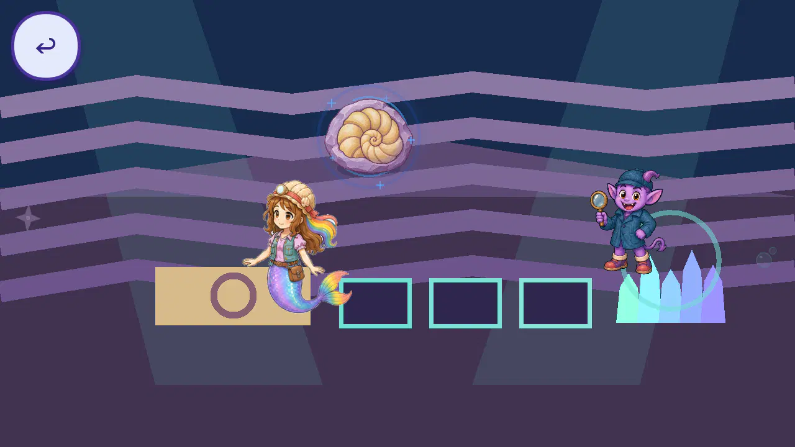
1280 #0 · Fossil invitation/approach · 3.2/5Painted fossil/soil conserved; remote hands persist. Brush/grid-cleared material relationship remains weak.
4cbaa5a4960f8f104288fa6c4b8117e17837abf77eab88dce54fb3983716ef0c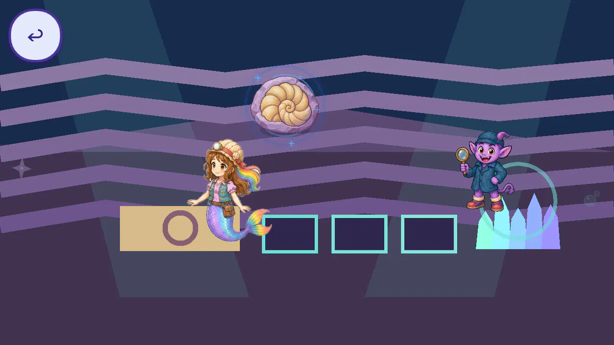
1280 #1 · Fossil invitation/approach · 3.2/5Painted fossil/soil conserved; remote hands persist. Brush/grid-cleared material relationship remains weak.
4be5d3e18e5a77ac7839c5cbda5399ea3201d33731507319a47b8bba8939c487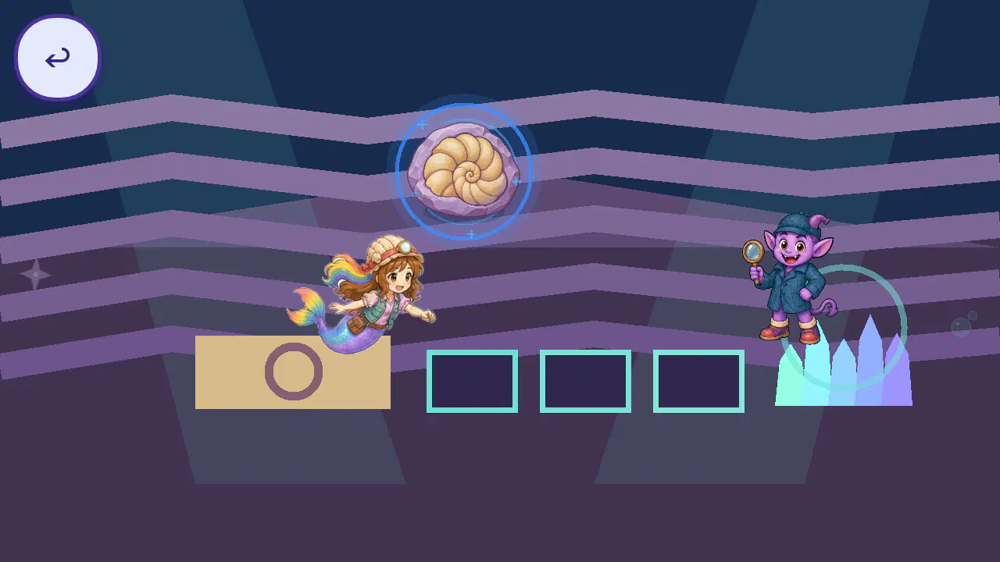
1280 #2 · Fossil invitation/approach · 3.2/5Painted fossil/soil conserved; remote hands persist. Brush/grid-cleared material relationship remains weak.
b41f21a2e6f1bc9ac1c9a6afa8717b0111593f76b4bf3ae944296c983d244d021280 #3 · Fossil invitation/approach · 3.2/5Painted fossil/soil conserved; remote hands persist. Brush/grid-cleared material relationship remains weak.
512d0f4c3f15da1a051f93c5c09662715f4eb38aaf0ad646f986bdbff6f80a77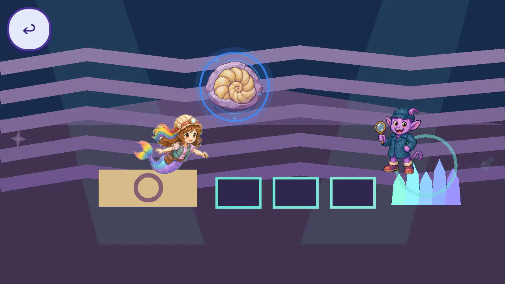
1280 #4 · Fossil invitation/approach · 3.2/5Painted fossil/soil conserved; remote hands persist. Brush/grid-cleared material relationship remains weak.
8af349ff3272d3510f250e5aa91ccccc0d839308a90232b9b2d85a13315855041280 #5 · Fossil invitation/approach · 3.2/5Painted fossil/soil conserved; remote hands persist. Brush/grid-cleared material relationship remains weak.
1859f88fc3b40f3568d999fae6b13c93bc72a27355d60f75d44fec3caa6c45521280 #6 · Fossil invitation/approach · 3.2/5Painted fossil/soil conserved; remote hands persist. Brush/grid-cleared material relationship remains weak.
dbd0c6ac1b657893902aed92685ebc53b557ffc485ddc04018565086d3ab0ec91280 #7 · Fossil invitation/approach · 3.2/5Painted fossil/soil conserved; remote hands persist. Brush/grid-cleared material relationship remains weak.
419eb4e0e26429acab2717c6058e68774e260f91503ba3deb94c53c6ed8e9e511280 #8 · Fossil invitation/approach · 3.2/5Painted fossil/soil conserved; remote hands persist. Brush/grid-cleared material relationship remains weak.
76d8ecb9cc9a20298ada8769cb5f04e92da6df71d605ed5694bbbc7afbe933c3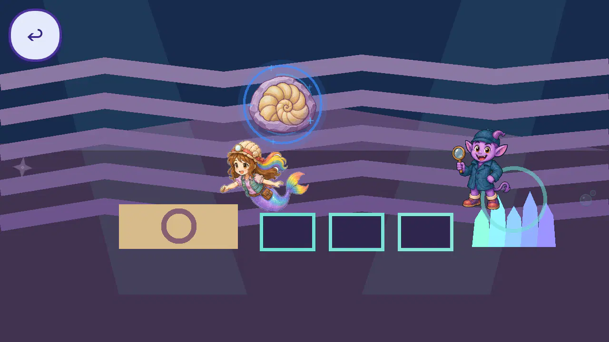
1280 #9 · Fossil invitation/approach · 3.2/5Painted fossil/soil conserved; remote hands persist. Brush/grid-cleared material relationship remains weak.
18e0a0f0b8c8895ebaa94f1aaff7aef301c4ef2fec9cd78b5bf82c5e04cca0021280 #10 · Fossil invitation/approach · 3.2/5Painted fossil/soil conserved; remote hands persist. Brush/grid-cleared material relationship remains weak.
bc85a4d334bb40bc7ebfa123961e212557569886149050285da23e81da47c3a31280 #11 · Fossil invitation/approach · 3.2/5Painted fossil/soil conserved; remote hands persist. Brush/grid-cleared material relationship remains weak.
baa814ebc904f507a8907b9018dfee8bb8c91173612f9e17622c5427a63246b4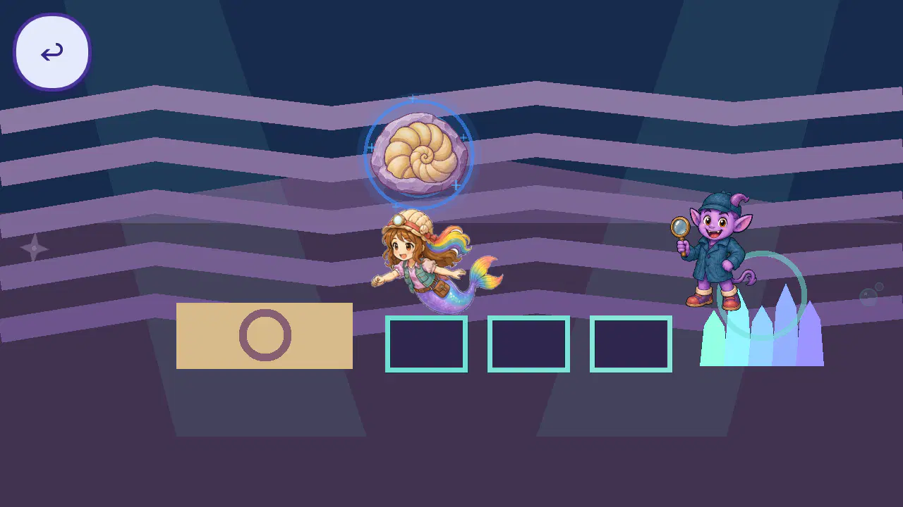
1280 #12 · Fossil invitation/approach · 3.2/5Painted fossil/soil conserved; remote hands persist. Brush/grid-cleared material relationship remains weak.
5ddd9ec3323ecfef6c73549e798e0e09c94276491052210b5e21aa5997a21a38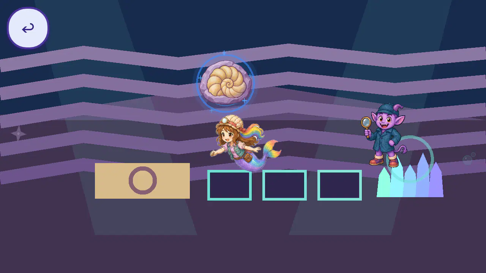
1280 #13 · Fossil invitation/approach · 3.2/5Painted fossil/soil conserved; remote hands persist. Brush/grid-cleared material relationship remains weak.
76db9a9c42df164e64a69ba1d574756c3c74eed827712aceaa66127db5a0fb921280 #14 · Fossil invitation/approach · 3.2/5Painted fossil/soil conserved; remote hands persist. Brush/grid-cleared material relationship remains weak.
0e2342d674b7eb395c908d48727f633b52ea8472e8bbc1377cf1aea2493c946e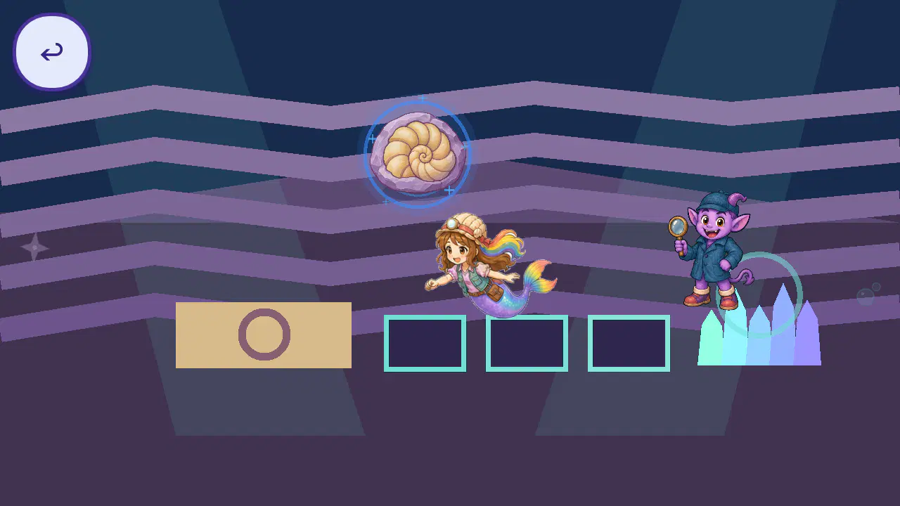
1280 #15 · Fossil invitation/approach · 3.2/5Painted fossil/soil conserved; remote hands persist. Brush/grid-cleared material relationship remains weak.
5bffd1927fc79ce641b363d888df522a0f686cc3da9b42ac463acc6b4536b0871280 #16 · Fossil invitation/approach · 3.2/5Painted fossil/soil conserved; remote hands persist. Brush/grid-cleared material relationship remains weak.
2a6ec6b3faafbeeb5bdfc578128aebedb1ad5ae53963e405bdae78ec752ee88b1280 #17 · Fossil invitation/approach · 3.2/5Painted fossil/soil conserved; remote hands persist. Brush/grid-cleared material relationship remains weak.
3de302a612deb4ff86ef271ca3c22320d2686322e2fc846f73f7a4a8f2751fee1280 #18 · Fossil invitation/approach · 3.2/5Painted fossil/soil conserved; remote hands persist. Brush/grid-cleared material relationship remains weak.
ef405256a9d3fa62f26b6f620add82435d829a682b5cccdc94a27c52d5b70b16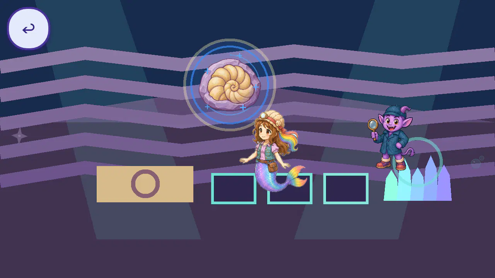
1280 #19 · Fossil invitation/approach · 3.2/5Painted fossil/soil conserved; remote hands persist. Brush/grid-cleared material relationship remains weak.
623f50db8573c63164edb8e5542ee15771a3c7b6ff7638844a15a5032ffb40fc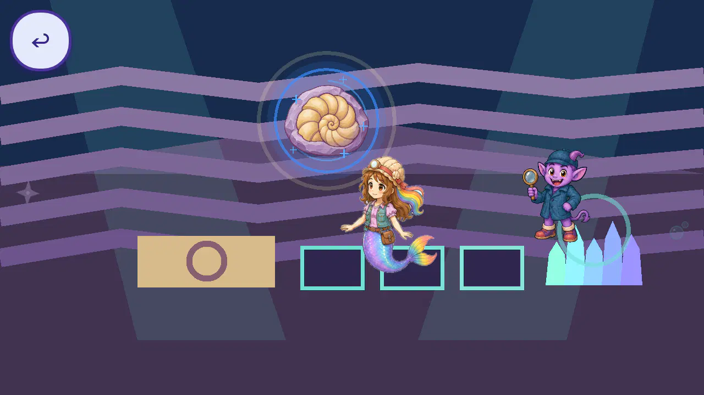
1280 #20 · Fossil invitation/approach · 3.2/5Painted fossil/soil conserved; remote hands persist. Brush/grid-cleared material relationship remains weak.
8af7f8ca86371bdb2ba74f0bfaa68d9bb898c74bc1f55f950666dd75ff4f029f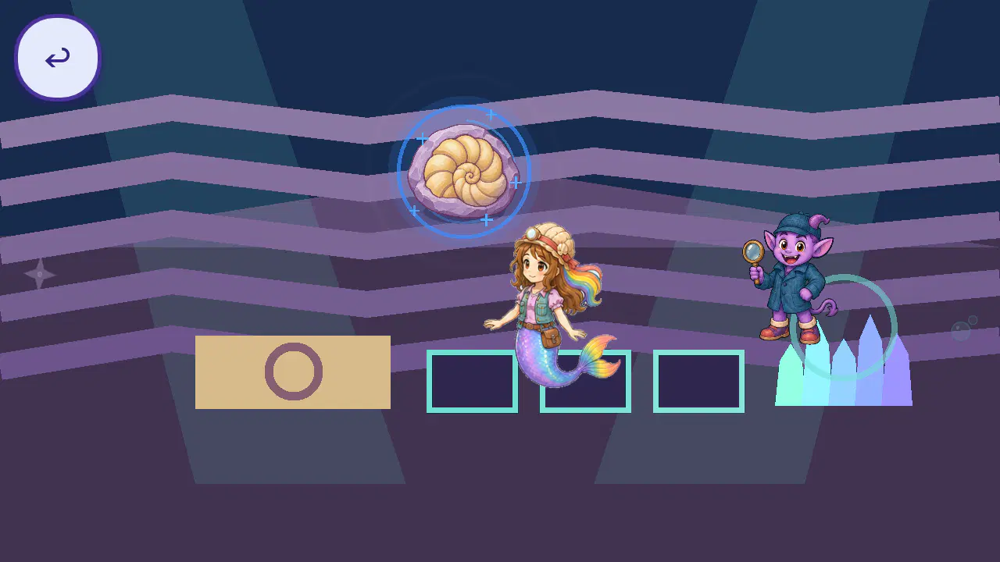
1280 #21 · Fossil invitation/approach · 3.2/5Painted fossil/soil conserved; remote hands persist. Brush/grid-cleared material relationship remains weak.
b354f9c26f7dce3c7470941e76307c40ba6caa9508581c429dbbc8a8e23daae6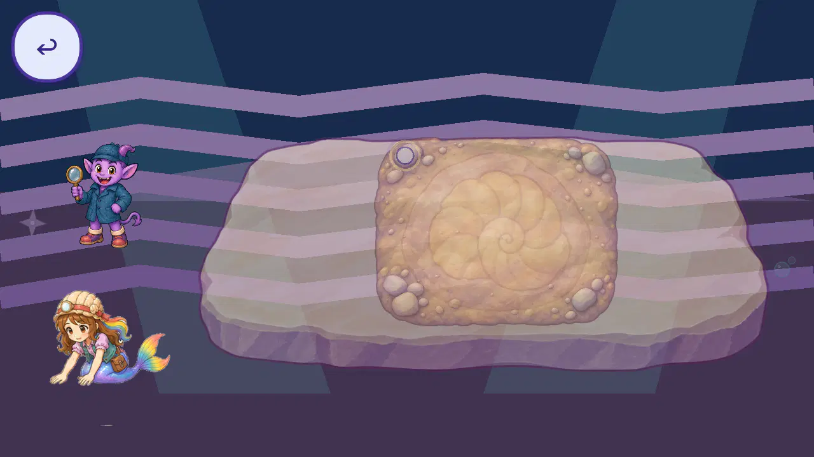
1280 #22 · Fossil invitation/approach · 3.2/5Painted fossil/soil conserved; remote hands persist. Brush/grid-cleared material relationship remains weak.
5e8aea7178daf9560bc770407116333a6854e1691b5d3e0b4fbd8516a28681d7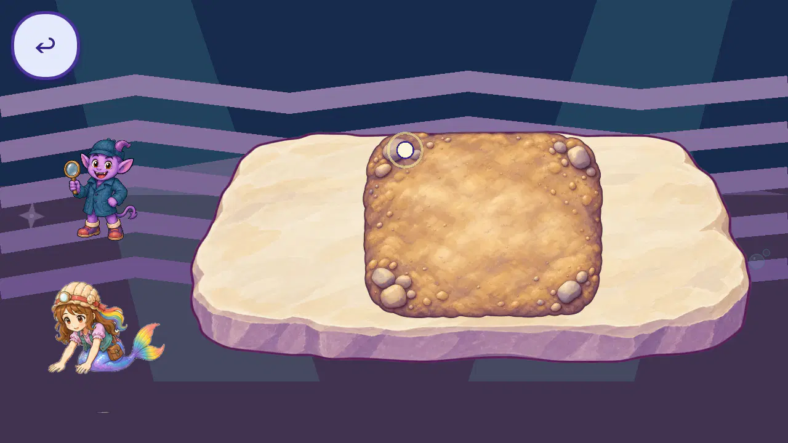
1280 #23 · Fossil invitation/approach · 3.2/5Painted fossil/soil conserved; remote hands persist. Brush/grid-cleared material relationship remains weak.
1d7968b555aa258028bc0176bbe8d42d671423c039eeb3b07bfe9b37da75eee41280 #24 · Fossil invitation/approach · 3.2/5Painted fossil/soil conserved; remote hands persist. Brush/grid-cleared material relationship remains weak.
6d3c15ac79b791d9903689854461fe2e6267ac6767f6f1a29abc580cf123eaa51280 #25 · Fossil invitation/approach · 3.2/5Painted fossil/soil conserved; remote hands persist. Brush/grid-cleared material relationship remains weak.
b0f8be5512c7f6198defeb83a1054a361aa812e09140b8ef41213ae1e4b83f2f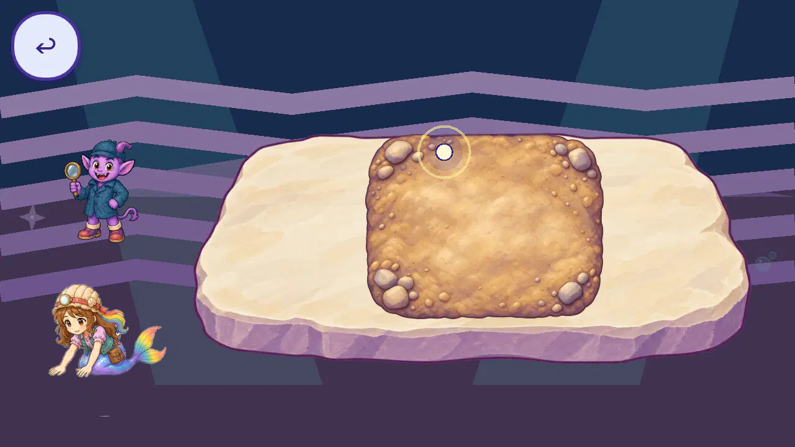
1280 #26 · Fossil invitation/approach · 3.2/5Painted fossil/soil conserved; remote hands persist. Brush/grid-cleared material relationship remains weak.
50f0ae07e9faff05287c698102c50b1d35698c17b1ca2c2fad2131a692c99f6c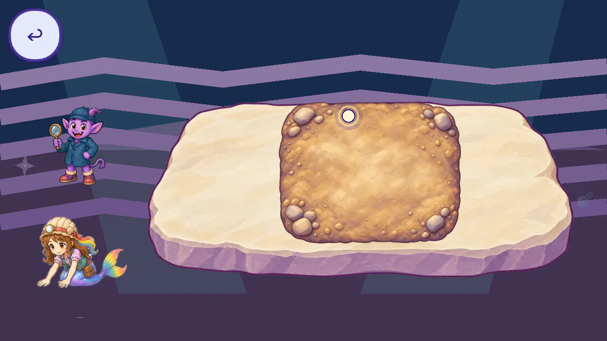
1280 #27 · Fossil invitation/approach · 3.2/5Painted fossil/soil conserved; remote hands persist. Brush/grid-cleared material relationship remains weak.
13174c961738787b0cf88c6eb4940d4446e5df1cef23ba9dde2a82e854cca9191280 #28 · Fossil invitation/approach · 3.2/5Painted fossil/soil conserved; remote hands persist. Brush/grid-cleared material relationship remains weak.
d97b5ded3c11a1d507e001c100893c9b657ade098b14d686e2d371d5bb3b3af71280 #29 · Fossil invitation/approach · 3.2/5Painted fossil/soil conserved; remote hands persist. Brush/grid-cleared material relationship remains weak.
0e597907e5f59ce8ea80733cf52b781ae10cd0155242067cae8bbc72df1f2698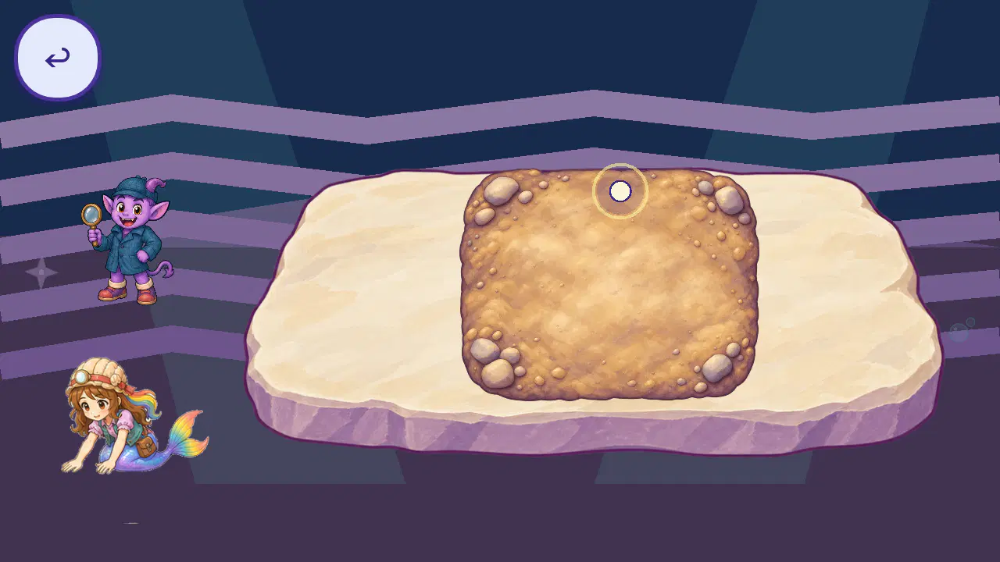
1280 #30 · Fossil invitation/approach · 3.2/5Painted fossil/soil conserved; remote hands persist. Brush/grid-cleared material relationship remains weak.
1ebc645b0d3b74f03e314b58d72dfe8d8ad8cded8d9ed3a034d5ab3d95d15865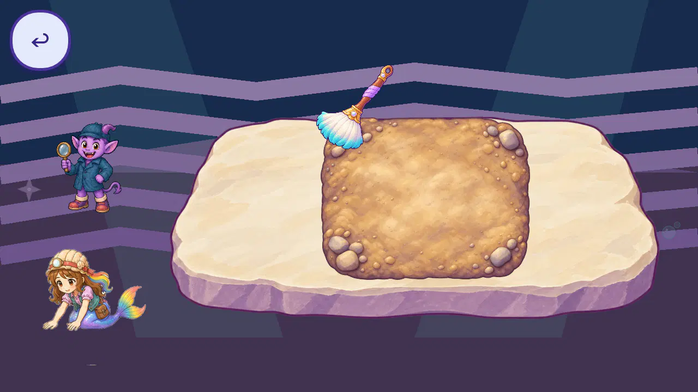
1280 #31 · Fossil invitation/approach · 3.2/5Painted fossil/soil conserved; remote hands persist. Brush/grid-cleared material relationship remains weak.
730032890219cc1a664d8baa816ae8e4c270bc62e74eae369edc8fb924f5d437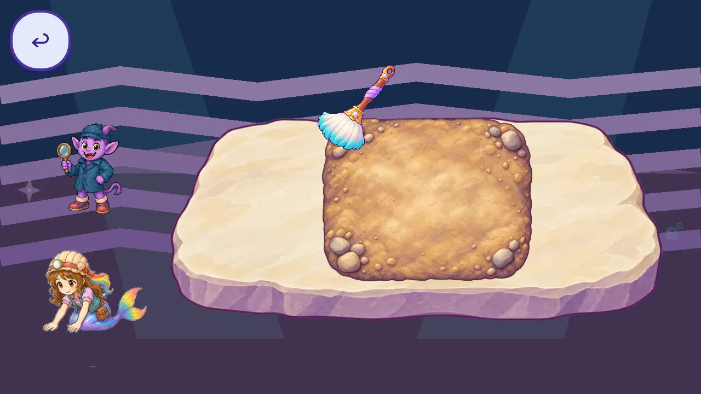
1280 #32 · Fossil invitation/approach · 3.2/5Painted fossil/soil conserved; remote hands persist. Brush/grid-cleared material relationship remains weak.
42a19cb163085ecfd325152eea694df5e7bc9d39140dc3b2243a73172cbe3b51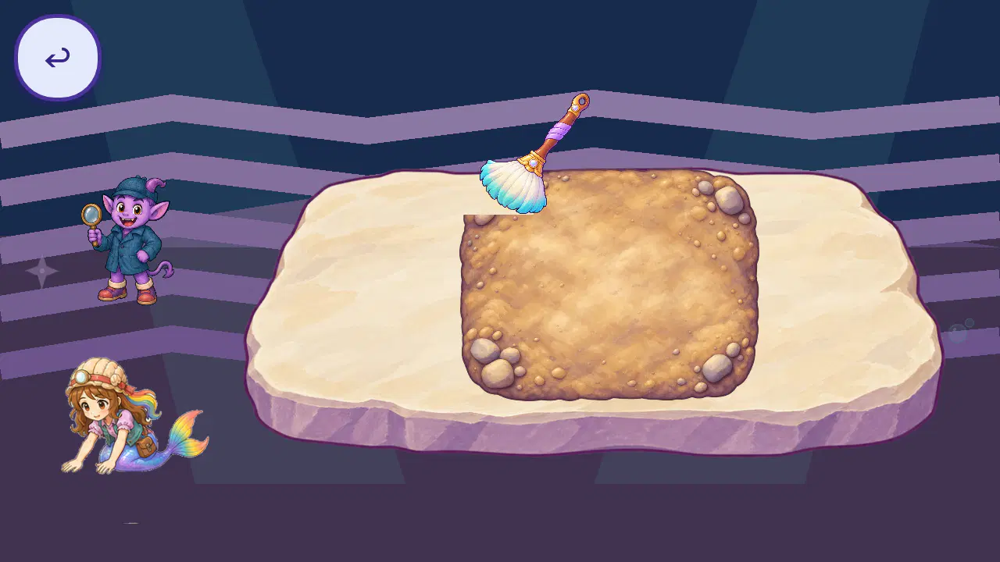
1280 #33 · Fossil brush/grid clearing · 3.2/5Painted fossil/soil conserved; remote hands persist. Brush/grid-cleared material relationship remains weak.
610ba3d7fd178b7a5e243aea6bf370a43d1fd55d396ad3b977c392d741a9478f1280 #34 · Fossil brush/grid clearing · 3.2/5Painted fossil/soil conserved; remote hands persist. Brush/grid-cleared material relationship remains weak.
4fed763bace01527efe1b3a3aac49bab43fcfad7eb58f22d76bfd953e139535c1280 #35 · Fossil brush/grid clearing · 3.2/5Painted fossil/soil conserved; remote hands persist. Brush/grid-cleared material relationship remains weak.
0a404f6ebf9d106733403ace8f731fe9dedc070c7f100bbd73a9da7820d3a07b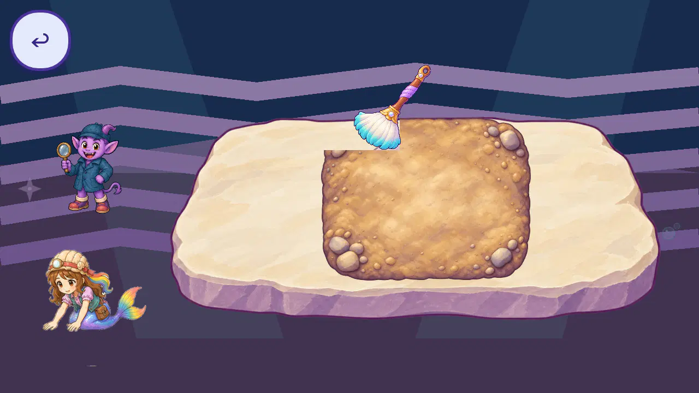
1280 #36 · Fossil brush/grid clearing · 3.2/5Painted fossil/soil conserved; remote hands persist. Brush/grid-cleared material relationship remains weak.
e019e2e1e49d98a481b82a9b01b4e41a14c6ecdf9663f3b4f2b5a035957c67e51280 #37 · Fossil brush/grid clearing · 3.2/5Painted fossil/soil conserved; remote hands persist. Brush/grid-cleared material relationship remains weak.
0ca88df27eb66edf02d5b9e2da1e95b6ec2f32522e20c626159e891a3a8460b21280 #38 · Fossil brush/grid clearing · 3.2/5Painted fossil/soil conserved; remote hands persist. Brush/grid-cleared material relationship remains weak.
3350bb57fec89490124efa5686f8393112c05ec33b85a677618a24f4fc46bd741280 #39 · Fossil brush/grid clearing · 3.2/5Painted fossil/soil conserved; remote hands persist. Brush/grid-cleared material relationship remains weak.
bbad2e89aa512175edd8e0968a9801f415eb8e372ef96ee5c9a737ad791342f91280 #40 · Fossil brush/grid clearing · 3.2/5Painted fossil/soil conserved; remote hands persist. Brush/grid-cleared material relationship remains weak.
acaa5c16f158afe90718ae62c8aac38f35c39357273657a71b3e6cb0a726fe7c1280 #41 · Fossil brush/grid clearing · 3.2/5Painted fossil/soil conserved; remote hands persist. Brush/grid-cleared material relationship remains weak.
6a1676b8c06f42c485df4aaffe161361ad4626b178581ba37e5ca598e18b07d91280 #42 · Fossil brush/grid clearing · 3.2/5Painted fossil/soil conserved; remote hands persist. Brush/grid-cleared material relationship remains weak.
b879a5540bbb292b2d98b1308b8381e03097ecdadac58b947119358bcffb79911280 #43 · Fossil brush/grid clearing · 3.2/5Painted fossil/soil conserved; remote hands persist. Brush/grid-cleared material relationship remains weak.
c915c322501a0f6851143bc39d12ac33e6502c745930740d75a5b4146b7fa4a61280 #44 · Fossil brush/grid clearing · 3.2/5Painted fossil/soil conserved; remote hands persist. Brush/grid-cleared material relationship remains weak.
a3e24a04b75ed1c17b1c456d274c2d89389da0fb8fa5ffbc1a8bf781a43bb0281280 #45 · Fossil brush/grid clearing · 3.2/5Painted fossil/soil conserved; remote hands persist. Brush/grid-cleared material relationship remains weak.
1e081232112978873d9a8a29e0bb155babe349f0639c91d8a32afa44c28d778a1280 #46 · Fossil brush/grid clearing · 3.2/5Painted fossil/soil conserved; remote hands persist. Brush/grid-cleared material relationship remains weak.
b88396afd88e4a813c8a8dbbd35b7251e8761f8b8150e09f306d3195737cf79e1280 #47 · Fossil brush/grid clearing · 3.2/5Painted fossil/soil conserved; remote hands persist. Brush/grid-cleared material relationship remains weak.
df11477ab774384fcba676f740b2b0d40ac323a4434cbe2774ac2699295d7f051280 #48 · Fossil brush/grid clearing · 3.2/5Painted fossil/soil conserved; remote hands persist. Brush/grid-cleared material relationship remains weak.
aad722213430dbe05fab62bf545e0c5dce85d7660917f4017ad2d207493a71951280 #49 · Fossil brush/grid clearing · 3.2/5Painted fossil/soil conserved; remote hands persist. Brush/grid-cleared material relationship remains weak.
a61fa1631c9b1ebdff6d3ea675664e658cc2ab623b5fe3902d71b335e5dfbf2f1280 #50 · Fossil brush/grid clearing · 3.2/5Painted fossil/soil conserved; remote hands persist. Brush/grid-cleared material relationship remains weak.
c56e13f5cdf7816303dc4a955432a7bad1c5c0d03e4dab40547514fcfbb821321280 #51 · Fossil brush/grid clearing · 3.2/5Painted fossil/soil conserved; remote hands persist. Brush/grid-cleared material relationship remains weak.
0a5f666bf39e7d705d53192379b67c9c5a200b33b6dfb13e3ba264d016212b8b1280 #52 · Fossil brush/grid clearing · 3.2/5Painted fossil/soil conserved; remote hands persist. Brush/grid-cleared material relationship remains weak.
3338753327639483712d8d3634615aaebcdcf2104fd506bffd658c5ac84866171280 #53 · Fossil brush/grid clearing · 3.2/5Painted fossil/soil conserved; remote hands persist. Brush/grid-cleared material relationship remains weak.
3fac7b85047d9940e896d98443392d17e19cbf4b0eb029f59d9ca783f8813c381280 #54 · Fossil brush/grid clearing · 3.2/5Painted fossil/soil conserved; remote hands persist. Brush/grid-cleared material relationship remains weak.
30dad4415433abbc627d90119e883649294007dd6e1ca8be1ba2cd7fae8b3d871280 #55 · Fossil brush/grid clearing · 3.2/5Painted fossil/soil conserved; remote hands persist. Brush/grid-cleared material relationship remains weak.
bda1bb791d74f7e96cc0024ec294f438b0e85c8e51b833c8249b8de8e7c620fd1280 #56 · Fossil brush/grid clearing · 3.2/5Painted fossil/soil conserved; remote hands persist. Brush/grid-cleared material relationship remains weak.
fe454e81c4c1cadc369b0d3f785fe810e4c3ca542b0a42b9ad858076580aab041280 #57 · Fossil brush/grid clearing · 3.2/5Painted fossil/soil conserved; remote hands persist. Brush/grid-cleared material relationship remains weak.
d3ec1df494906f8621db53b8a368c84c39f709b77f03fd480b7a7d4161c392611280 #58 · Fossil brush/grid clearing · 3.2/5Painted fossil/soil conserved; remote hands persist. Brush/grid-cleared material relationship remains weak.
a4983a3f1c7ebf670ea268abeb09ed9cb984c8a88005c531dfd67ca40aced13b1280 #59 · Fossil brush/grid clearing · 3.2/5Painted fossil/soil conserved; remote hands persist. Brush/grid-cleared material relationship remains weak.
9b41be9e1d2113f14fe69a46bf3b30ae35494203bd0ccbe48517d37df91fe3c41280 #60 · Fossil brush/grid clearing · 3.2/5Painted fossil/soil conserved; remote hands persist. Brush/grid-cleared material relationship remains weak.
f1ec7e62ae6d1f73dc49eb873b4aa1d00a158cf9ffa0604c6934efe0e815c4ac1280 #61 · Fossil brush/grid clearing · 3.2/5Painted fossil/soil conserved; remote hands persist. Brush/grid-cleared material relationship remains weak.
92bacddfa05e45605a1245777fb2ec231c7fdb381117ac5a0f3cede2a6993b901280 #62 · Fossil brush/grid clearing · 3.2/5Painted fossil/soil conserved; remote hands persist. Brush/grid-cleared material relationship remains weak.
4dbc1dd46e48053c0a6f932c9763449758846346c84bf7629472830e99cfe2e31280 #63 · Fossil brush/grid clearing · 3.2/5Painted fossil/soil conserved; remote hands persist. Brush/grid-cleared material relationship remains weak.
b85b234a552b10bb8952a091febe76d8107fee2ec4fa71367bad90dfe2e46bf61280 #64 · Fossil brush/grid clearing · 3.2/5Painted fossil/soil conserved; remote hands persist. Brush/grid-cleared material relationship remains weak.
5097d567eb51827b3a622e3d084ae8202baca6aadc51d81da9815e1df2cf47bc1280 #65 · Fossil brush/grid clearing · 3.2/5Painted fossil/soil conserved; remote hands persist. Brush/grid-cleared material relationship remains weak.
4c0f79b07b795b936672d835c45c5aaf9743c7555839e3c99076866694e686651280 #66 · Fossil brush/grid clearing · 3.2/5Painted fossil/soil conserved; remote hands persist. Brush/grid-cleared material relationship remains weak.
bd6451e8fcbdce938043949ce8edb369db5e2ca7c2a93e7049359c09445d06221280 #67 · Fossil brush/grid clearing · 3.2/5Painted fossil/soil conserved; remote hands persist. Brush/grid-cleared material relationship remains weak.
c618eabf0077356c1a644734a7924cbde1b753bbbe5c348ec5244fef76a7a6fc1280 #68 · Fossil brush/grid clearing · 3.2/5Painted fossil/soil conserved; remote hands persist. Brush/grid-cleared material relationship remains weak.
6a473982fd6f4454307000801a803d5a46a11f3df317a088f207bb2af9e7de731280 #69 · Fossil brush/grid clearing · 3.2/5Painted fossil/soil conserved; remote hands persist. Brush/grid-cleared material relationship remains weak.
c945786422efc173de01dca2f6fba7afb7fa135bab139ac64719fa7cb43bed5a1280 #70 · Fossil brush/grid clearing · 3.2/5Painted fossil/soil conserved; remote hands persist. Brush/grid-cleared material relationship remains weak.
b7570c2231007bb0801c1c1e2e2525ba7429092064a1960dffb0d9d06c058abf1280 #71 · Fossil brush/grid clearing · 3.2/5Painted fossil/soil conserved; remote hands persist. Brush/grid-cleared material relationship remains weak.
8afcdd2a0a08dacc8a9a3ff5c02a7d23780808f2390cd844376c014a26f87b6e1280 #72 · Fossil brush/grid clearing · 3.2/5Painted fossil/soil conserved; remote hands persist. Brush/grid-cleared material relationship remains weak.
25955722352141bff7633748ac26040ef5c34df4a1e143af6c63dd7cd8decffd1280 #73 · Fossil brush/grid clearing · 3.2/5Painted fossil/soil conserved; remote hands persist. Brush/grid-cleared material relationship remains weak.
b1c1dc829b43b126dc24276958ad06072bd1a7c7a4e6ef6cef96a709c3830a581280 #74 · Fossil brush/grid clearing · 3.2/5Painted fossil/soil conserved; remote hands persist. Brush/grid-cleared material relationship remains weak.
d85ff90585782f3d525ef1a9da0fbfe0ca6089af855c6597eee8394228c994ba1280 #75 · Fossil brush/grid clearing · 3.2/5Painted fossil/soil conserved; remote hands persist. Brush/grid-cleared material relationship remains weak.
4bd020b1499eb546bcbc3af96f13a93473a368038457fefbc705598713ec385d1280 #76 · Fossil brush/grid clearing · 3.2/5Painted fossil/soil conserved; remote hands persist. Brush/grid-cleared material relationship remains weak.
fbfc9dd81785b3dd1fa720d4184924b870ad6ce3808615b229ac09d7cbf8ac321280 #77 · Fossil brush/grid clearing · 3.2/5Painted fossil/soil conserved; remote hands persist. Brush/grid-cleared material relationship remains weak.
1b120873689fe8d681c2378ff560a7ba2ea16ffd68d0c482afa909c79ebcec631280 #78 · Fossil brush/grid clearing · 3.2/5Painted fossil/soil conserved; remote hands persist. Brush/grid-cleared material relationship remains weak.
66d5366b7a48b864688c7502491f18adfe8ea10a6d37e15b0bfdaf4f2ad152e41280 #79 · Fossil brush/grid clearing · 3.2/5Painted fossil/soil conserved; remote hands persist. Brush/grid-cleared material relationship remains weak.
c194b80f97c0f9fda1b2d137e2ec86c590d09c76e883dd5b36d4a0588eb09c961280 #80 · Fossil brush/grid clearing · 3.2/5Painted fossil/soil conserved; remote hands persist. Brush/grid-cleared material relationship remains weak.
f4eac3f0361dc46d9e6ff31f9d7b1b289055587127e2b2c0eba75412299d47981280 #81 · Fossil brush/grid clearing · 3.2/5Painted fossil/soil conserved; remote hands persist. Brush/grid-cleared material relationship remains weak.
f4daf8fc24e491350390686130866b4877fa8207b4f78a9c049d60193bd770301280 #82 · Fossil brush/grid clearing · 3.2/5Painted fossil/soil conserved; remote hands persist. Brush/grid-cleared material relationship remains weak.
f83999bc4b6cb7575b6c455299b23e5efefaf3b7f30ef71559f8c35533eb928e1280 #83 · Fossil brush/grid clearing · 3.2/5Painted fossil/soil conserved; remote hands persist. Brush/grid-cleared material relationship remains weak.
0c557c9385691c9f49e1d9ba693e58a6507e31f9dfcd5a59afcbfcc00b3934f31280 #84 · Fossil brush/grid clearing · 3.2/5Painted fossil/soil conserved; remote hands persist. Brush/grid-cleared material relationship remains weak.
627801bed941551025f2380c227b7b3d179f647c439412ff937146f98803dcac1280 #85 · Fossil brush/grid clearing · 3.2/5Painted fossil/soil conserved; remote hands persist. Brush/grid-cleared material relationship remains weak.
3eeb16bdbc8fd07962e1f2181e483fabeb00957c598bb5434631b2b6fac57de91280 #86 · Fossil brush/grid clearing · 3.2/5Painted fossil/soil conserved; remote hands persist. Brush/grid-cleared material relationship remains weak.
b2e6206accc65cca0dfe9130751cc2fee7e521c9fe8e94aef833af74ba706d5a1280 #87 · Fossil brush/grid clearing · 3.2/5Painted fossil/soil conserved; remote hands persist. Brush/grid-cleared material relationship remains weak.
b3939d9645cbb2880833a493b10a52a972d95d60be3bcc134caca5fd912071431280 #88 · Fossil brush/grid clearing · 3.2/5Painted fossil/soil conserved; remote hands persist. Brush/grid-cleared material relationship remains weak.
0f7787d51a94478954f3d409985f7b24b72097fe24618f0613930e55c12966331280 #89 · Fossil brush/grid clearing · 3.2/5Painted fossil/soil conserved; remote hands persist. Brush/grid-cleared material relationship remains weak.
b6a602408e90f961da9bc27397ba262ea6588b2ccef2d74b900f31bb331c5aa61280 #90 · Fossil brush/grid clearing · 3.2/5Painted fossil/soil conserved; remote hands persist. Brush/grid-cleared material relationship remains weak.
0832bbd7d6ff8381170422b56ee53df4c18d78129597c4e182d8015e782bc9471280 #91 · Fossil brush/grid clearing · 3.2/5Painted fossil/soil conserved; remote hands persist. Brush/grid-cleared material relationship remains weak.
5a08044764ab627cb12baa39322d582d0ac3b4e98700197ce800cf796bb0e5461280 #92 · Fossil brush/grid clearing · 3.2/5Painted fossil/soil conserved; remote hands persist. Brush/grid-cleared material relationship remains weak.
c6eed9069903987e6a870bfd30f69f02b9ed8fe788605ff0c7c3920720ae73fa1280 #93 · Fossil brush/grid clearing · 3.2/5Painted fossil/soil conserved; remote hands persist. Brush/grid-cleared material relationship remains weak.
84e944cf773af5e7e6e654996459f71ef817144cedaecffbe4e8ae41590290f61280 #94 · Fossil brush/grid clearing · 3.2/5Painted fossil/soil conserved; remote hands persist. Brush/grid-cleared material relationship remains weak.
7263ba022f70437036b0acd784af4fa975a6e626be6ab4cd6b77cd1b7555dfc31280 #95 · Fossil brush/grid clearing · 3.2/5Painted fossil/soil conserved; remote hands persist. Brush/grid-cleared material relationship remains weak.
9e18ee73372819495e3db6fbb93d91fcbf75f9efe801608150aa2837cf1499fb1280 #96 · Fossil brush/grid clearing · 3.2/5Painted fossil/soil conserved; remote hands persist. Brush/grid-cleared material relationship remains weak.
0276796d9ab40db5d460350ab418fd1c1f2445280988c8321f4fa507358a2e941280 #97 · Fossil brush/grid clearing · 3.2/5Painted fossil/soil conserved; remote hands persist. Brush/grid-cleared material relationship remains weak.
9431c65175e8fdd0e7197d1b48a7fbbe361264d961b3b07ca44ad8cb1e14bc5d1280 #98 · Fossil brush/grid clearing · 3.2/5Painted fossil/soil conserved; remote hands persist. Brush/grid-cleared material relationship remains weak.
c7a19516ad608be0a15784d6808dc7708d5f487f83387698cea1bd842e499d221280 #99 · Fossil brush/grid clearing · 3.2/5Painted fossil/soil conserved; remote hands persist. Brush/grid-cleared material relationship remains weak.
3ab4a84ccc0a0171ec9bc47eb581a72b76692c7274c3c6e8d9ea732d6cc1f86a1280 #100 · Fossil brush/grid clearing · 3.2/5Painted fossil/soil conserved; remote hands persist. Brush/grid-cleared material relationship remains weak.
1044855abdfd72c3edb07ca7f16fd364ba0c7e88c25aa262ba4889ef95d946891280 #101 · Fossil brush/grid clearing · 3.2/5Painted fossil/soil conserved; remote hands persist. Brush/grid-cleared material relationship remains weak.
7b3642a2c4d8de5c0fbf4f50831b1f8e4d4a7d871245673687c9d347c531c3081280 #102 · Fossil brush/grid clearing · 3.2/5Painted fossil/soil conserved; remote hands persist. Brush/grid-cleared material relationship remains weak.
c15dd0795b89c33a3232d5b90a02986703b30c7db5c19ab714652772b232fa621280 #103 · Fossil brush/grid clearing · 3.2/5Painted fossil/soil conserved; remote hands persist. Brush/grid-cleared material relationship remains weak.
fc38f77402b9a047cad57297cd13d12df1621910547877efb5f173d05671cb711280 #104 · Fossil brush/grid clearing · 3.2/5Painted fossil/soil conserved; remote hands persist. Brush/grid-cleared material relationship remains weak.
cfd03a40ee7e8e1164de0194f99083bef3f7e21713b320e689006947a57cf0be1280 #105 · Fossil brush/grid clearing · 3.2/5Painted fossil/soil conserved; remote hands persist. Brush/grid-cleared material relationship remains weak.
75427fc123c66de932296fa6851d82ecaa3fe3fceb403fab16da54d3e5a672981280 #106 · Fossil brush/grid clearing · 3.2/5Painted fossil/soil conserved; remote hands persist. Brush/grid-cleared material relationship remains weak.
0fdc80a8b748dfdbaa55e3b064eb6f15ac4e44e25d3fbb67f5505a0e132705081280 #107 · Fossil brush/grid clearing · 3.2/5Painted fossil/soil conserved; remote hands persist. Brush/grid-cleared material relationship remains weak.
f4c46065a5853dbf5e9de8783318aba483cf211a2504613f0eb065ba1bb473521280 #108 · Fossil brush/grid clearing · 3.2/5Painted fossil/soil conserved; remote hands persist. Brush/grid-cleared material relationship remains weak.
d23da8931fff27a6d8a9a208428f62ddedc0f8f770a425422ad28d0e02e8dc001280 #109 · Fossil vertical-strip assembly · 3.2/5Painted fossil/soil conserved; remote hands persist. Rigid vertical strip pieces remain unheld.
fdbdcbd2187e0422e72a87f752fef45ca4a044328d5602871c91326df642121e1280 #110 · Fossil vertical-strip assembly · 3.2/5Painted fossil/soil conserved; remote hands persist. Rigid vertical strip pieces remain unheld.
c92544bdbb4a3f8ac1ee0eec62999d078a617776b14375ed12f1405113ce8d211280 #111 · Fossil vertical-strip assembly · 3.2/5Painted fossil/soil conserved; remote hands persist. Rigid vertical strip pieces remain unheld.
cd9dc4a7a5b90821d10b1b0ecf52dbe5c25727bd0bf3f5add58d03e2be7a54641280 #112 · Fossil vertical-strip assembly · 3.2/5Painted fossil/soil conserved; remote hands persist. Rigid vertical strip pieces remain unheld.
9de84d22cf6b97e87ab865cd91019a5d8bdb95abfd4554fb63ea066111becdfd1280 #113 · Fossil vertical-strip assembly · 3.2/5Painted fossil/soil conserved; remote hands persist. Rigid vertical strip pieces remain unheld.
422f8606b7a6f8cc07b587727771ec21b7ffa7ebec73a1916e9047d8d35e042c1280 #114 · Fossil vertical-strip assembly · 3.2/5Painted fossil/soil conserved; remote hands persist. Rigid vertical strip pieces remain unheld.
c787db231d0450cb471957c87ea1a3a1e03351ecd88b46ea8b42278ec313e0781280 #115 · Fossil vertical-strip assembly · 3.2/5Painted fossil/soil conserved; remote hands persist. Rigid vertical strip pieces remain unheld.
ea123f55c0be27c40abc37c598f8f8de23ce197d4d8343518fb07069e138aa651280 #116 · Fossil vertical-strip assembly · 3.2/5Painted fossil/soil conserved; remote hands persist. Rigid vertical strip pieces remain unheld.
cec234cf7049bf5a21c984396b51f09901f2270959f4b14da0604c147ec3f4381280 #117 · Fossil vertical-strip assembly · 3.2/5Painted fossil/soil conserved; remote hands persist. Rigid vertical strip pieces remain unheld.
0befb83b8d16f1ad7f6bb856e0b472c7ca850e24d757b0401f5070ca1a76b5851280 #118 · Fossil vertical-strip assembly · 3.2/5Painted fossil/soil conserved; remote hands persist. Rigid vertical strip pieces remain unheld.
b6a20823e484b730bb504487ef1a2ba30a80d7c43029563fc5297792852f9adf1280 #119 · Fossil vertical-strip assembly · 3.2/5Painted fossil/soil conserved; remote hands persist. Rigid vertical strip pieces remain unheld.
ac5b8458688c58aee8158ad84acd39b2dbda4fa248cddd63d06816274df7c5a01280 #120 · Fossil vertical-strip assembly · 3.2/5Painted fossil/soil conserved; remote hands persist. Rigid vertical strip pieces remain unheld.
c16edcab9248b535671084900d3b4f84baa93d145b0fc3b09c30b1073075ff2d1280 #121 · Fossil vertical-strip assembly · 3.2/5Painted fossil/soil conserved; remote hands persist. Rigid vertical strip pieces remain unheld.
60e9051f74af82df2885b696914ab9a024cd64139cd5c56f5f395f5f9e8643e21280 #122 · Fossil vertical-strip assembly · 3.2/5Painted fossil/soil conserved; remote hands persist. Rigid vertical strip pieces remain unheld.
0cfc432f0afcaedfab655a4b8175ad10a871fdb7827057a71b1dd60107f787f51280 #123 · Fossil vertical-strip assembly · 3.2/5Painted fossil/soil conserved; remote hands persist. Rigid vertical strip pieces remain unheld.
06ab9d42836df741d27010018822f86e23adc6352fb35d9d58563aed0d3766241280 #124 · Fossil vertical-strip assembly · 3.2/5Painted fossil/soil conserved; remote hands persist. Rigid vertical strip pieces remain unheld.
a7a2ab5e1c206784f61c4b307366d986ab8736fd59aecf9dfc7550adc49f2fd41280 #125 · Fossil vertical-strip assembly · 3.2/5Painted fossil/soil conserved; remote hands persist. Rigid vertical strip pieces remain unheld.
365c3c8eb2eeaa9438affdb163eba6be0ff4ca03d574de371a1b72b418dce3781280 #126 · Fossil vertical-strip assembly · 3.2/5Painted fossil/soil conserved; remote hands persist. Rigid vertical strip pieces remain unheld.
a4e9bfdf9e76f27391e905c5178beb24ce247955d2732bc33d7862a75cc81b0f1280 #127 · Fossil vertical-strip assembly · 3.2/5Painted fossil/soil conserved; remote hands persist. Rigid vertical strip pieces remain unheld.
9e285be3a5c41ac31ea3e964728e3d616ee11dea4071d1a7cb1657192940f5b51280 #128 · Fossil vertical-strip assembly · 3.2/5Painted fossil/soil conserved; remote hands persist. Rigid vertical strip pieces remain unheld.
88591e0ff046d8bd25ab7e578a336bf663c3bf88ca09a738f3ffc524905b7f091280 #129 · Fossil vertical-strip assembly · 3.2/5Painted fossil/soil conserved; remote hands persist. Rigid vertical strip pieces remain unheld.
4f58d64f3c40f7df5077b4b0bc9265c7a530617b6f14ebf00e5e6917b185ac161280 #130 · Fossil vertical-strip assembly · 3.2/5Painted fossil/soil conserved; remote hands persist. Rigid vertical strip pieces remain unheld.
97b85b7d8714936fb877cc3654141abf5fa3d7ff26e6ef9ba5a62bb05aaad54a1280 #131 · Fossil vertical-strip assembly · 3.2/5Painted fossil/soil conserved; remote hands persist. Rigid vertical strip pieces remain unheld.
9d894d409ad2227beb1e5a9a98e72290961ef5e519546ad734a1876188143bac1280 #132 · Fossil vertical-strip assembly · 3.2/5Painted fossil/soil conserved; remote hands persist. Rigid vertical strip pieces remain unheld.
82ba164f824247d0ab1f8e4ed251d5aeb296e5088515dbeedec43ead086445b21280 #133 · Fossil vertical-strip assembly · 3.2/5Painted fossil/soil conserved; remote hands persist. Rigid vertical strip pieces remain unheld.
5a5b06bc348d335ceccc9b578eba70142328123ffc9f84e1b0dcdf45414d24ac1280 #134 · Fossil vertical-strip assembly · 3.2/5Painted fossil/soil conserved; remote hands persist. Rigid vertical strip pieces remain unheld.
0e34362d8386fefdc12c6e8be24082a66a526793aff28071e8080dc672002ed11280 #135 · Fossil vertical-strip assembly · 3.2/5Painted fossil/soil conserved; remote hands persist. Rigid vertical strip pieces remain unheld.
9788791ac07be20379ca215c6bad499bf5495b5e73217ad94662c63e8c0097571280 #136 · Fossil vertical-strip assembly · 3.2/5Painted fossil/soil conserved; remote hands persist. Rigid vertical strip pieces remain unheld.
51a910d8a7b1b0ddaf0215f399a31db32833d408c8a36a8673572d6a819ca2221280 #137 · Fossil vertical-strip assembly · 3.2/5Painted fossil/soil conserved; remote hands persist. Rigid vertical strip pieces remain unheld.
bbc35717d594d163993e371d9802d544493d2a123e1d8e15ea009994e8e6dd351280 #138 · Fossil vertical-strip assembly · 3.2/5Painted fossil/soil conserved; remote hands persist. Rigid vertical strip pieces remain unheld.
5cf910b3eb25e848e4ad831ac6a38c1b4292874cb10c6a7a85002ba141da5aef1280 #139 · Fossil vertical-strip assembly · 3.2/5Painted fossil/soil conserved; remote hands persist. Rigid vertical strip pieces remain unheld.
deb93f1d1db2673c42d0c634e44b7177fede83b06a216701258101c66b054bcf1280 #140 · Fossil vertical-strip assembly · 3.2/5Painted fossil/soil conserved; remote hands persist. Rigid vertical strip pieces remain unheld.
474055adf889981218f10ee06dfbc23ebc7003a6aa0ed6939e62320d300af8951280 #141 · Fossil vertical-strip assembly · 3.2/5Painted fossil/soil conserved; remote hands persist. Rigid vertical strip pieces remain unheld.
1baa3307e740f816a960a74bb34c6b3704ffc2de3aab9139570a78449f37e3881280 #142 · Fossil vertical-strip assembly · 3.2/5Painted fossil/soil conserved; remote hands persist. Rigid vertical strip pieces remain unheld.
afaf162771ce23bae5c7eb80b7d727d46b6633a9e6959b845c4d8c1480d6deb41280 #143 · Fossil vertical-strip assembly · 3.2/5Painted fossil/soil conserved; remote hands persist. Rigid vertical strip pieces remain unheld.
5a7d1741527b8494f37b365935c3742bbfc2bd1790a6d0313a36fe4819fb75ef1280 #144 · Fossil vertical-strip assembly · 3.2/5Painted fossil/soil conserved; remote hands persist. Rigid vertical strip pieces remain unheld.
db10f84ebf36e3a65f531f12b5666016832c2e27ad327c680f751fa1f608961b1280 #145 · Fossil vertical-strip assembly · 3.2/5Painted fossil/soil conserved; remote hands persist. Rigid vertical strip pieces remain unheld.
8cc23064b61492f5839e30efeb1f230d723d671c92c7bd0597f39edb106becef1280 #146 · Fossil vertical-strip assembly · 3.2/5Painted fossil/soil conserved; remote hands persist. Rigid vertical strip pieces remain unheld.
138f1136d26d0b7c87929fc340eb44c4ae4c668870597f99622cbc9cbf2a6efe1280 #147 · Fossil vertical-strip assembly · 3.2/5Painted fossil/soil conserved; remote hands persist. Rigid vertical strip pieces remain unheld.
7bb72a3b5a70359af33b2f1b9eb78b8ae1723dbfe267aacdf5336910bb32bd6d1280 #148 · Fossil vertical-strip assembly · 3.2/5Painted fossil/soil conserved; remote hands persist. Rigid vertical strip pieces remain unheld.
4171416966195794f6e0ecf5da5102a81b488ff2712e94fb5e5fde9afe29d1771280 #149 · Fossil vertical-strip assembly · 3.2/5Painted fossil/soil conserved; remote hands persist. Rigid vertical strip pieces remain unheld.
bde0308f329c7580c7c015b5da871130fb5dfad2994207dc98a1e96b2e8d04491280 #150 · Fossil vertical-strip assembly · 3.2/5Painted fossil/soil conserved; remote hands persist. Rigid vertical strip pieces remain unheld.
18f63bbb8d6451971c46637e0aad3e35aa1bdaf3d9f536219c959e01620f74f01280 #151 · Fossil vertical-strip assembly · 3.2/5Painted fossil/soil conserved; remote hands persist. Rigid vertical strip pieces remain unheld.
5a6e01d6fbd94d1f1f5d8a6fd2d4cc6166fdfeba9f96ace051724f9ff3afb2d61280 #152 · Fossil vertical-strip assembly · 3.2/5Painted fossil/soil conserved; remote hands persist. Rigid vertical strip pieces remain unheld.
377f3be148e4e9bd188ff773a535723b5010eb998bacfd3de28843bc2ecac8661280 #153 · Fossil vertical-strip assembly · 3.2/5Painted fossil/soil conserved; remote hands persist. Rigid vertical strip pieces remain unheld.
af5de873c8b4865d8c00e4618bf1af231551fd232fa03305f952d46a41d0c3bf1280 #154 · Fossil vertical-strip assembly · 3.2/5Painted fossil/soil conserved; remote hands persist. Rigid vertical strip pieces remain unheld.
87046dc87b95655179bc85f823ebdbfda2bef9eb6d3239260649e4330f6b84821280 #155 · Fossil vertical-strip assembly · 3.2/5Painted fossil/soil conserved; remote hands persist. Rigid vertical strip pieces remain unheld.
66b3d96034932e83ecd30033a92510ce7cb19b6d6ed64c9f01501145b27ca3401280 #156 · Fossil vertical-strip assembly · 3.2/5Painted fossil/soil conserved; remote hands persist. Rigid vertical strip pieces remain unheld.
c804ede06a9e5cdcfb5ff68d43e4248fd56b03ec6428b48efc926a6a62f8fe341280 #157 · Fossil vertical-strip assembly · 3.2/5Painted fossil/soil conserved; remote hands persist. Rigid vertical strip pieces remain unheld.
003165ddc1bfce7cf2e4c65f52936815ced169ff94a8d69294f3f9768b3d7d471280 #158 · Fossil vertical-strip assembly · 3.2/5Painted fossil/soil conserved; remote hands persist. Rigid vertical strip pieces remain unheld.
f9a9b4de14cc7d5ff8dcc6e5183ce9ffde8ee86c3db1bba37df4ef6f6aa2901f1280 #159 · Fossil vertical-strip assembly · 3.2/5Painted fossil/soil conserved; remote hands persist. Rigid vertical strip pieces remain unheld.
5f8679cba45d80cd6c6d58dc0cc7692354a04c9d06b9cda5d26e9219786eaf911280 #160 · Fossil vertical-strip assembly · 3.2/5Painted fossil/soil conserved; remote hands persist. Rigid vertical strip pieces remain unheld.
2d0cf5df99edcf421c871f58fbe08cb9c2672a544359b654d70c5d4decf4ff2a1280 #161 · Fossil vertical-strip assembly · 3.2/5Painted fossil/soil conserved; remote hands persist. Rigid vertical strip pieces remain unheld.
281274fda0dd6dd1e85614c9bf0403e83e3e0d76a6aabcf40568aca07b6e472d1280 #162 · Fossil vertical-strip assembly · 3.2/5Painted fossil/soil conserved; remote hands persist. Rigid vertical strip pieces remain unheld.
304debad3fbe58b50859fb4b5199c2ec379ed21736a081247aa40a5e1040f7701280 #163 · Fossil vertical-strip assembly · 3.2/5Painted fossil/soil conserved; remote hands persist. Rigid vertical strip pieces remain unheld.
6416e11ebb75df61b63bc1b91231deb2a7461693319056c92c6291c9721e38551280 #164 · Fossil vertical-strip assembly · 3.2/5Painted fossil/soil conserved; remote hands persist. Rigid vertical strip pieces remain unheld.
0ff83363a652dc78b05227393ee6db81fb06c1c939cf11091c15e566a2d29c811280 #165 · Fossil vertical-strip assembly · 3.2/5Painted fossil/soil conserved; remote hands persist. Rigid vertical strip pieces remain unheld.
3abbe229237fa6686b1fda266b34a83b11fb77ef643a2c81d3b2d6b505ee4dfc1280 #166 · Fossil vertical-strip assembly · 3.2/5Painted fossil/soil conserved; remote hands persist. Rigid vertical strip pieces remain unheld.
223c32fd76783cdba1939677c384bd6c376691da6c94520590ea4b5b2af8ca091280 #167 · Fossil vertical-strip assembly · 3.2/5Painted fossil/soil conserved; remote hands persist. Rigid vertical strip pieces remain unheld.
bffe06da05b346a4d5c1fef77e1c2c7e5ab4721221dfefabbbb4b18fb8c6ae3f1280 #168 · Fossil vertical-strip assembly · 3.2/5Painted fossil/soil conserved; remote hands persist. Rigid vertical strip pieces remain unheld.
8e2b29ecc64b68695a54c881b2dca6510657665549c5a6be767a2309ee42547a1280 #169 · Fossil vertical-strip assembly · 3.2/5Painted fossil/soil conserved; remote hands persist. Rigid vertical strip pieces remain unheld.
f579148477f37478342ccdee198eb564e4e6424d27e944f36290ac98f99127081280 #170 · Fossil vertical-strip assembly · 3.2/5Painted fossil/soil conserved; remote hands persist. Rigid vertical strip pieces remain unheld.
8efc12f348cb8efe535c53c4b61e01839501f5924e17fce2e3ba8b133facd5b71280 #171 · Fossil vertical-strip assembly · 3.2/5Painted fossil/soil conserved; remote hands persist. Rigid vertical strip pieces remain unheld.
7069edefd7119566c0dfe596d6523f2c14482a4ce2cae5f4dd40f6f12b7c0a641280 #172 · Fossil vertical-strip assembly · 3.2/5Painted fossil/soil conserved; remote hands persist. Rigid vertical strip pieces remain unheld.
afa50bf1d65a5ea521534f4965aeacb981cd2af3e78433f1a214bf671eaeaa7c1280 #173 · Fossil vertical-strip assembly · 3.2/5Painted fossil/soil conserved; remote hands persist. Rigid vertical strip pieces remain unheld.
a6020767a973a79181615d305aa3e0861e1a535f9b98a692e99b4230e94919f81280 #174 · Fossil vertical-strip assembly · 3.2/5Painted fossil/soil conserved; remote hands persist. Rigid vertical strip pieces remain unheld.
4c874826570705f27462f7c56d6e730486021e8f92a83a15de9b4274f532c72b1280 #175 · Fossil vertical-strip assembly · 3.2/5Painted fossil/soil conserved; remote hands persist. Rigid vertical strip pieces remain unheld.
dd0399ec95920f6925263c902dc4b02e005e9a60b172bf1244960ab91ee9eda71280 #176 · Fossil vertical-strip assembly · 3.2/5Painted fossil/soil conserved; remote hands persist. Rigid vertical strip pieces remain unheld.
ef989a8c802c0b777db730858837a5ea91962441b822fa45c1678ef8254621b31280 #177 · Fossil vertical-strip assembly · 3.2/5Painted fossil/soil conserved; remote hands persist. Rigid vertical strip pieces remain unheld.
cc323ad8652e483f5df23165d59b5f9a4dfff5c3ab3d3c496679fa3b715b86291280 #178 · Fossil vertical-strip assembly · 3.2/5Painted fossil/soil conserved; remote hands persist. Rigid vertical strip pieces remain unheld.
ff5a9a1874cbccf1fcc7a99a65760f58cca91b5ab60fa6fcd6e3137a94096e971280 #179 · Fossil vertical-strip assembly · 3.2/5Painted fossil/soil conserved; remote hands persist. Rigid vertical strip pieces remain unheld.
0e008865db118938d758d94d08da408c8c5094ab8b6ae95382e088ba2dae11311280 #180 · Fossil vertical-strip assembly · 3.2/5Painted fossil/soil conserved; remote hands persist. Rigid vertical strip pieces remain unheld.
a4c5fc75ea11250a05564f3749ef96b6cfd1f37e19be1f1fc6758cb78dbee1af1280 #181 · Fossil vertical-strip assembly · 3.2/5Painted fossil/soil conserved; remote hands persist. Rigid vertical strip pieces remain unheld.
74c0163dfab60652de517f6b410b51d27ae9ee1b11ad251f95528806a96b29551280 #182 · Fossil vertical-strip assembly · 3.2/5Painted fossil/soil conserved; remote hands persist. Rigid vertical strip pieces remain unheld.
84b117f55051946e7b228f66aa219fc043e38a19e754a9be849eee7404dc821e1280 #183 · Fossil vertical-strip assembly · 3.2/5Painted fossil/soil conserved; remote hands persist. Rigid vertical strip pieces remain unheld.
44aa3fa6701509e7b9b62e95bdf3010a01fc7f5bbe751f7c18136bbdf45676eb1280 #184 · Fossil vertical-strip assembly · 3.2/5Painted fossil/soil conserved; remote hands persist. Rigid vertical strip pieces remain unheld.
b17718e757947cbc27ac0e7407ef83e7440c813fcff755f976c4c91c3eecb4521280 #185 · Fossil vertical-strip assembly · 3.2/5Painted fossil/soil conserved; remote hands persist. Rigid vertical strip pieces remain unheld.
55969ac493c985e3009701bece8ef810364ddcb27ebd9d9bca2fe2ff07d07d611280 #186 · Fossil vertical-strip assembly · 3.2/5Painted fossil/soil conserved; remote hands persist. Rigid vertical strip pieces remain unheld.
45e5b0f364149d1ea638f6c53a810b2af88dbb070064561345c8e2231c0ffacd1280 #187 · Fossil vertical-strip assembly · 3.2/5Painted fossil/soil conserved; remote hands persist. Rigid vertical strip pieces remain unheld.
2f019d199900cba4a307fe9364a6d23bb13876e27b6da617c417bbe2600c8a6b1280 #188 · Fossil vertical-strip assembly · 3.2/5Painted fossil/soil conserved; remote hands persist. Rigid vertical strip pieces remain unheld.
add047fc7af9b278326f8adc263c21be0e01c07e352f2910d886937ad6089c631280 #189 · Fossil vertical-strip assembly · 3.2/5Painted fossil/soil conserved; remote hands persist. Rigid vertical strip pieces remain unheld.
1ec06e7391cbd4431d854af58f9ec76e1b2cf9d448d8c26b0d8f20a38991472c1280 #190 · Fossil vertical-strip assembly · 3.2/5Painted fossil/soil conserved; remote hands persist. Rigid vertical strip pieces remain unheld.
1013e0eb592a434071ffae6a5d9412190ea40a903546219a598ac96312ea213f1280 #191 · Fossil vertical-strip assembly · 3.2/5Painted fossil/soil conserved; remote hands persist. Rigid vertical strip pieces remain unheld.
d2ff19c56cdff4c25679e979edec379ae3ce9a987b1f0a77e6f6aa7191e80cec1280 #192 · Fossil vertical-strip assembly · 3.2/5Painted fossil/soil conserved; remote hands persist. Rigid vertical strip pieces remain unheld.
ac6d8e372b39d61430c12179ecb17b5d5212fe16027b206471c7fe3579a3da871280 #193 · Fossil vertical-strip assembly · 3.2/5Painted fossil/soil conserved; remote hands persist. Rigid vertical strip pieces remain unheld.
8900471eacd4d0d88c61943901cdce4012afa2c36f96611eb42ec51ffd39cb3e1280 #194 · Fossil vertical-strip assembly · 3.2/5Painted fossil/soil conserved; remote hands persist. Rigid vertical strip pieces remain unheld.
7698e76864bd9437501c92b06d088ab5146b0bb72f9d43d51649325c4ef6153e1280 #195 · Fossil vertical-strip assembly · 3.2/5Painted fossil/soil conserved; remote hands persist. Rigid vertical strip pieces remain unheld.
364b9d7561bc0bf2e3a31c40a5b836110237d9ed5af7b40c661df0fe31cabcf11280 #196 · Fossil vertical-strip assembly · 3.2/5Painted fossil/soil conserved; remote hands persist. Rigid vertical strip pieces remain unheld.
2161ab0658110c8f50420108ab6c6c5ccd8298d6976d8b8a0de27238e1cf2e071280 #197 · Fossil vertical-strip assembly · 3.2/5Painted fossil/soil conserved; remote hands persist. Rigid vertical strip pieces remain unheld.
33576f674187f247104551b7fe4502d6e10f06988cdff77d0d62675a15101baf1280 #198 · Fossil vertical-strip assembly · 3.2/5Painted fossil/soil conserved; remote hands persist. Rigid vertical strip pieces remain unheld.
1f4eab295bb513fdc04d43ee488c304288c59b20875a21914f4f1b6a9e0be5c11280 #199 · Fossil vertical-strip assembly · 3.2/5Painted fossil/soil conserved; remote hands persist. Rigid vertical strip pieces remain unheld.
d200939cf5bf4b48644d5ef4268abe2fda282bf2d8595dc5e3fbe4c8fc4942921280 #200 · Fossil vertical-strip assembly · 3.2/5Painted fossil/soil conserved; remote hands persist. Rigid vertical strip pieces remain unheld.
d6f7779036a3f9c595cd0dc06cee194c65ef9fd80d10af0de312d0c3896b332f1280 #201 · Fossil vertical-strip assembly · 3.2/5Painted fossil/soil conserved; remote hands persist. Rigid vertical strip pieces remain unheld.
5a98650538c9f01b4b8e79b65a35227482ffafa503b2cd3c8c345d8721f091301280 #202 · Fossil vertical-strip assembly · 3.2/5Painted fossil/soil conserved; remote hands persist. Rigid vertical strip pieces remain unheld.
423a09758133b2a1ba71677d26f71b998eb9b90c867f1af4fb8ffcef488981141280 #203 · Fossil vertical-strip assembly · 3.2/5Painted fossil/soil conserved; remote hands persist. Rigid vertical strip pieces remain unheld.
030d3172af8d9b59ae4b0ab83a80e2006233191074456a70ff6458003eb19cea1280 #204 · Fossil vertical-strip assembly · 3.2/5Painted fossil/soil conserved; remote hands persist. Rigid vertical strip pieces remain unheld.
5ef5b65400d357a022b66f1234adfdc63f08a5fadb3d694fa15905a70f596ef21280 #205 · Fossil earned endpoint/hold · 4.0/5Painted fossil/soil conserved; remote hands persist. Joined endpoint holds; generic raised-crystal acting is separate.
15dce2a32826650df4ae9b8f4007ba4e3bcea0e3b66aafd6f488f639dd86f6721280 #206 · Fossil earned endpoint/hold · 4.0/5Painted fossil/soil conserved; remote hands persist. Joined endpoint holds; generic raised-crystal acting is separate.
74a0907fc9051d539b5d64872d5dde4e26921bdd29aac43abf546b49825eea711280 #207 · Fossil earned endpoint/hold · 4.0/5Painted fossil/soil conserved; remote hands persist. Joined endpoint holds; generic raised-crystal acting is separate.
7657be739be26ca872d171b5a88fb8fad0cef6ef8c29eacd69b6cb9a027985d01280 #208 · Fossil earned endpoint/hold · 4.0/5Painted fossil/soil conserved; remote hands persist. Joined endpoint holds; generic raised-crystal acting is separate.
8a799081ca4a47ff9fd9eea3d114a37bff5e4b15611c6e2329f9c7b304b2080f1280 #209 · Fossil earned endpoint/hold · 4.0/5Painted fossil/soil conserved; remote hands persist. Joined endpoint holds; generic raised-crystal acting is separate.
3950572020185fda82eba0b901d47e99a3e7489bfa9dc03cce1bd2502a383a731280 #210 · Fossil earned endpoint/hold · 4.0/5Painted fossil/soil conserved; remote hands persist. Joined endpoint holds; generic raised-crystal acting is separate.
9cd03ebb33fbc71a7d9f4a125ec8f418d5282425db3f972af841e7753facc5f81280 #211 · Fossil earned endpoint/hold · 4.0/5Painted fossil/soil conserved; remote hands persist. Joined endpoint holds; generic raised-crystal acting is separate.
de03c347db44c07f2c36369f22c6049e2ce3b9cabe016403e72781d1c52418d41280 #212 · Fossil earned endpoint/hold · 4.0/5Painted fossil/soil conserved; remote hands persist. Joined endpoint holds; generic raised-crystal acting is separate.
c88a827f7e35a692b340c68f262cd2140c9d47fb13e20236462e3f7b988bb8ce1280 #213 · Fossil earned endpoint/hold · 4.0/5Painted fossil/soil conserved; remote hands persist. Joined endpoint holds; generic raised-crystal acting is separate.
316f4aa9f60defeb88b18222bb03e461cc244aef229ae8b4dfc56a90dc4e3e1d1280 #214 · Fossil earned endpoint/hold · 4.0/5Painted fossil/soil conserved; remote hands persist. Joined endpoint holds; generic raised-crystal acting is separate.
4a6ff5e0c7a12db8f0a62f135d279ace2132c0b295f71701216e77248fb842591280 #215 · Fossil earned endpoint/hold · 4.0/5Painted fossil/soil conserved; remote hands persist. Joined endpoint holds; generic raised-crystal acting is separate.
a6498d53beaecac7c98de0846541f38d0d865eec7f644bc599a0bf7c0eefd9081280 #216 · Fossil earned endpoint/hold · 4.0/5Painted fossil/soil conserved; remote hands persist. Joined endpoint holds; generic raised-crystal acting is separate.
be19073f1f665f104bab19631cce8a33d3085569bf575416cf441049992ccec41280 #217 · Fossil earned endpoint/hold · 4.0/5Painted fossil/soil conserved; remote hands persist. Joined endpoint holds; generic raised-crystal acting is separate.
654e01deeb796ae05ea72919d2a881d780be80112e728748687bf44f353427e11280 #218 · Fossil earned endpoint/hold · 4.0/5Painted fossil/soil conserved; remote hands persist. Joined endpoint holds; generic raised-crystal acting is separate.
c40db4c3bfca379cf32c536e8cfd2a5581061e4ff734f7886b50fb07de4e9f261280 #219 · Fossil earned endpoint/hold · 4.0/5Painted fossil/soil conserved; remote hands persist. Joined endpoint holds; generic raised-crystal acting is separate.
f4c5b311a363fb8433fce7019b61d8cc981eec9b195ef531c883563ab9218f731280 #220 · Fossil earned endpoint/hold · 4.0/5Painted fossil/soil conserved; remote hands persist. Joined endpoint holds; generic raised-crystal acting is separate.
a95afd25677269584ed9a1d4584c87b37413c81ea3bcbf4f1549e3ba27a2fda51280 #221 · Fossil earned endpoint/hold · 4.0/5Painted fossil/soil conserved; remote hands persist. Joined endpoint holds; generic raised-crystal acting is separate.
647ca3bbcac148fbe5bec6eeeb2d468981becbf67b22eb25dca22f1170d4bc741280 #222 · Fossil earned endpoint/hold · 4.0/5Painted fossil/soil conserved; remote hands persist. Joined endpoint holds; generic raised-crystal acting is separate.
ad222ad4f4e58e05114f06a591c091b299670762cb476120b508eae1150019c81280 #223 · Fossil earned endpoint/hold · 4.0/5Painted fossil/soil conserved; remote hands persist. Joined endpoint holds; generic raised-crystal acting is separate.
97b032b76795d709c83ed2ed96e8718d657f705bd3f3faba33780650e432b8301280 #224 · Fossil earned endpoint/hold · 4.0/5Painted fossil/soil conserved; remote hands persist. Joined endpoint holds; generic raised-crystal acting is separate.
00f4b69d083029faa2fd8dc402113055369815e4f1583f5bec9fa5b72370c7f41280 #225 · Pan translation/washing · 3.4/5Good painted bowl; remote empty hands, unchanged water and threshold grain/mineral changes remain. Reversal state=0, minerals=0.
a97f31893989a70621fb7179903e34d87b0db489e8480cb23df78fc1646558bc1280 #226 · Pan translation/washing · 3.4/5Good painted bowl; remote empty hands, unchanged water and threshold grain/mineral changes remain. Reversal state=0, minerals=0.
46b2e54241cba21111fe22aef94815c383b18fd9a330b385e0ded4473a3818461280 #227 · Pan translation/washing · 3.4/5Good painted bowl; remote empty hands, unchanged water and threshold grain/mineral changes remain. Reversal state=0, minerals=0.
cd945dc31113ee7a18ba4aeae0efef57572eb05b7d830aea477dc105491a57101280 #228 · Pan translation/washing · 3.4/5Good painted bowl; remote empty hands, unchanged water and threshold grain/mineral changes remain. Reversal state=0, minerals=0.
361ad5eff45346b68cf99e09952552855e2120ddbde82783b2aa0582a69d22c91280 #229 · Pan translation/washing · 3.4/5Good painted bowl; remote empty hands, unchanged water and threshold grain/mineral changes remain. Reversal state=0, minerals=0.
fe92dc28899222efa2a3f461749df6a6a5411afa9c177dd58024f6c2d6d164c51280 #230 · Pan translation/washing · 3.4/5Good painted bowl; remote empty hands, unchanged water and threshold grain/mineral changes remain. Reversal state=0, minerals=0.
6463f824048aa009270294599d5c55237d45fa72a3ca86e9c22efb28a95cd6631280 #231 · Pan translation/washing · 3.4/5Good painted bowl; remote empty hands, unchanged water and threshold grain/mineral changes remain. Reversal state=0, minerals=0.
06474eacd4c33ef8169163bfd4a8a6f14b9ed1b288916af770a8097a1b8eac9b1280 #232 · Pan translation/washing · 3.4/5Good painted bowl; remote empty hands, unchanged water and threshold grain/mineral changes remain. Reversal state=0, minerals=0.
d76e0a017387a95c1f208e4dd54ab9d58e60d08b5d0fa1debe99b7a1c1cef0cc1280 #233 · Pan translation/washing · 3.4/5Good painted bowl; remote empty hands, unchanged water and threshold grain/mineral changes remain. Reversal state=0, minerals=0.
31cadc18a72ffae80ba5bb5910c01cfb9777b0786a072746dd37d9056ba0a39d1280 #234 · Pan translation/washing · 3.4/5Good painted bowl; remote empty hands, unchanged water and threshold grain/mineral changes remain. Reversal state=0, minerals=0.
595003a78760c15752d2e15a724ebbd5311709f77997b260013ed84d4a155d031280 #235 · Pan translation/washing · 3.4/5Good painted bowl; remote empty hands, unchanged water and threshold grain/mineral changes remain. Reversal state=0, minerals=0.
5dd83aea4465dc6b02512a4a963f9d793e9846a01e68c968862d338769fe26ca1280 #236 · Pan translation/washing · 3.4/5Good painted bowl; remote empty hands, unchanged water and threshold grain/mineral changes remain. Reversal state=0, minerals=0.
147dd8020780138fc22735e84281091413fec733a082cb791a6fa218ebe8ff251280 #237 · Pan translation/washing · 3.4/5Good painted bowl; remote empty hands, unchanged water and threshold grain/mineral changes remain. Reversal state=0, minerals=0.
a8207feb9b9d1e489c0ab3ee59196ecef6e435e204eb86f3b66e385cdc7cc8c91280 #238 · Pan translation/washing · 3.4/5Good painted bowl; remote empty hands, unchanged water and threshold grain/mineral changes remain. Reversal state=0, minerals=0.
26d979e2d3c458e5bc11211cc0025585b424490f47724b1b66c950af688351341280 #239 · Pan translation/washing · 3.4/5Good painted bowl; remote empty hands, unchanged water and threshold grain/mineral changes remain. Reversal state=0, minerals=0.
e3171260afa43352d12a2bebcb8045ea33b8da63898ba6180dd587c84c2f7af11280 #240 · Pan translation/washing · 3.4/5Good painted bowl; remote empty hands, unchanged water and threshold grain/mineral changes remain. Reversal state=0, minerals=0.
9c4705b1e65fe5ad029e190462211151701bb2d96a8bd10be92c2ccffe3237e71280 #241 · Pan translation/washing · 3.4/5Good painted bowl; remote empty hands, unchanged water and threshold grain/mineral changes remain. Reversal state=0, minerals=0.
1283409823279da5baf0dd52939e7affc8ae163a9205237ca5392abb2fddae451280 #242 · Pan translation/washing · 3.4/5Good painted bowl; remote empty hands, unchanged water and threshold grain/mineral changes remain. Reversal state=0, minerals=0.
7e6d9ebe8cf84bef983869e6b3a48baae4d58e743da8d187aae737b11a9bf86a1280 #243 · Pan translation/washing · 3.4/5Good painted bowl; remote empty hands, unchanged water and threshold grain/mineral changes remain. Reversal state=0, minerals=0.
5ab5a94f31190ac76367032c511a47bd7f920d086a9ac430531e994b368d27561280 #244 · Pan translation/washing · 3.4/5Good painted bowl; remote empty hands, unchanged water and threshold grain/mineral changes remain. Reversal state=0, minerals=0.
c817c3798759d4c6de328f76e8714d672519ae650abe0fa00c32cdadd255c0b91280 #245 · Pan translation/washing · 3.4/5Good painted bowl; remote empty hands, unchanged water and threshold grain/mineral changes remain. Reversal state=0, minerals=0.
91c2d4e3e00a80f640f8787f202393f2465727d0486f0fd01be3e368339ee3331280 #246 · Pan translation/washing · 3.4/5Good painted bowl; remote empty hands, unchanged water and threshold grain/mineral changes remain. Reversal state=0, minerals=0.
3e1bb009c5b289b1f35d012f2398924495a1ddda98d2259d9f5a741c0dcf6e851280 #247 · Pan translation/washing · 3.4/5Good painted bowl; remote empty hands, unchanged water and threshold grain/mineral changes remain. Reversal state=0, minerals=0.
447c39309e7fa89920b750904955f02fb96b9293c2a9c649d6c33d80111eedc81280 #248 · Pan translation/washing · 3.4/5Good painted bowl; remote empty hands, unchanged water and threshold grain/mineral changes remain. Reversal state=0, minerals=0.
87e054bc2159e5a9f1eb4739b44b5912c27dd7df4a08bf79990b3c542ed6a4831280 #249 · Pan translation/washing · 3.4/5Good painted bowl; remote empty hands, unchanged water and threshold grain/mineral changes remain. Reversal state=0, minerals=0.
0c1506977d076bb0f59d550c6c7146a60d76efb0d0477ce656fcad0633fa8d2f1280 #250 · Pan translation/washing · 3.4/5Good painted bowl; remote empty hands, unchanged water and threshold grain/mineral changes remain. Reversal state=0, minerals=0.
0dd51e264aa8ee8ebfd4dbfeca6a0869e77398cb65848e405a77f9ea52fff4231280 #251 · Pan translation/washing · 3.4/5Good painted bowl; remote empty hands, unchanged water and threshold grain/mineral changes remain. Reversal state=0, minerals=0.
285a46cda9c690960e835ba783be44c0f5f6083025aa36c9d86ec9a94d1a73851280 #252 · Pan translation/washing · 3.4/5Good painted bowl; remote empty hands, unchanged water and threshold grain/mineral changes remain. Reversal state=0, minerals=0.
86e1a6dffa995a8c23552bb50d835109e9796f46cea43ca82bebf3eb740b78b51280 #253 · Pan translation/washing · 3.4/5Good painted bowl; remote empty hands, unchanged water and threshold grain/mineral changes remain. Reversal state=0, minerals=0.
6e8002c2463013d1e1ebd98fa90930a5448aed5b35862e61c0702cd938d5fcca1280 #254 · Pan translation/washing · 3.4/5Good painted bowl; remote empty hands, unchanged water and threshold grain/mineral changes remain. Reversal state=0, minerals=0.
6b40de3fd7e0f84e1dc18c99f0a62913ca425ecc5c3ab76c325f620165ee22511280 #255 · Pan translation/washing · 3.4/5Good painted bowl; remote empty hands, unchanged water and threshold grain/mineral changes remain. Reversal state=0, minerals=0.
44bf1ba9c5388c89bef77767a1cf09af7b3037710b82a71c9a3f1ca562c112931280 #256 · Pan translation/washing · 3.4/5Good painted bowl; remote empty hands, unchanged water and threshold grain/mineral changes remain. Reversal state=0, minerals=0.
1f4e9e7921efb53ea1c8d231abd23e8878c5c4714e9c9c4c8cbc09598a2b659b1280 #257 · Pan translation/washing · 3.4/5Good painted bowl; remote empty hands, unchanged water and threshold grain/mineral changes remain. Reversal state=0, minerals=0.
1f615c6a9c7f3ecffd3a701e2af402d160f636fcd306879f058255e59dab9cee1280 #258 · Pan translation/washing · 3.4/5Good painted bowl; remote empty hands, unchanged water and threshold grain/mineral changes remain. Reversal state=0, minerals=0.
9fe34d1979a6e3b1b180f355eba896ec2744d618efc7b44ddf43f7ddda420f611280 #259 · Pan translation/washing · 3.4/5Good painted bowl; remote empty hands, unchanged water and threshold grain/mineral changes remain. Reversal state=0, minerals=0.
c5726389fcac560d7e1fd44c6c981b33ff4668817dad233d113fe89d722494011280 #260 · Pan translation/washing · 3.4/5Good painted bowl; remote empty hands, unchanged water and threshold grain/mineral changes remain. Reversal state=0, minerals=0.
3167017503b5536b11ac285b19ba5fb7250a7702f54473709e1c1ab77f5118281280 #261 · Pan translation/washing · 3.4/5Good painted bowl; remote empty hands, unchanged water and threshold grain/mineral changes remain. Reversal state=0, minerals=0.
5a207d957cc05d518d7151a1b9033aadb4776aa30f03f64fba662409b1adf8661280 #262 · Pan translation/washing · 3.4/5Good painted bowl; remote empty hands, unchanged water and threshold grain/mineral changes remain. Reversal state=0, minerals=0.
c18c832c6f4991769b71db861efb1109ea1b81b1546547a5bfa036fc50e9bc851280 #263 · Pan translation/washing · 3.4/5Good painted bowl; remote empty hands, unchanged water and threshold grain/mineral changes remain. Reversal state=0, minerals=0.
67cff9414ee64d2bd054923aa3b5d12b14d8f0da729081c4891b2cded411afdf1280 #264 · Pan translation/washing · 3.4/5Good painted bowl; remote empty hands, unchanged water and threshold grain/mineral changes remain. Reversal state=0, minerals=0.
32ca0c01b3af7e24aee9507a6bbc9dc5a0d1af2730074248a80662158b6c5df11280 #265 · Pan translation/washing · 3.4/5Good painted bowl; remote empty hands, unchanged water and threshold grain/mineral changes remain. Reversal state=0, minerals=0.
6784eec8f22610de9f81d70f675905b1e326d96a56d162f71af474bfc56737ce1280 #266 · Pan translation/washing · 3.4/5Good painted bowl; remote empty hands, unchanged water and threshold grain/mineral changes remain. Reversal state=0, minerals=0.
ccb2dccc9c150d8503a009efda028069a3cfceb3ac148ef7cbdfe7ebfc1111131280 #267 · Pan translation/washing · 3.4/5Good painted bowl; remote empty hands, unchanged water and threshold grain/mineral changes remain. Reversal state=0, minerals=0.
518b61c9860ae5a7236357aa222415437e0543d12a40a1db47cb5f2633ead6051280 #268 · Pan translation/washing · 3.4/5Good painted bowl; remote empty hands, unchanged water and threshold grain/mineral changes remain. Reversal state=1, minerals=0.
e5fb22fae60d2d126814fa1b91df2425af66d14ebe815ad376bb2d95d5b66a8a1280 #269 · Pan translation/washing · 3.4/5Good painted bowl; remote empty hands, unchanged water and threshold grain/mineral changes remain. Reversal state=1, minerals=0.
0d73bcda137da172348a7ef261b7ced09adc2ad7780c4832e7660f905d9b99a21280 #270 · Pan translation/washing · 3.4/5Good painted bowl; remote empty hands, unchanged water and threshold grain/mineral changes remain. Reversal state=1, minerals=0.
1453013d9d1edab6189016918e5f48ac877af9e8f2c190ebbe936d29ea7a5ddb1280 #271 · Pan translation/washing · 3.4/5Good painted bowl; remote empty hands, unchanged water and threshold grain/mineral changes remain. Reversal state=1, minerals=0.
c4f728963ee53e0a17494f8dfc200656e5a0d8f9cda85138f51b551465c83a611280 #272 · Pan translation/washing · 3.4/5Good painted bowl; remote empty hands, unchanged water and threshold grain/mineral changes remain. Reversal state=1, minerals=0.
93d542c9f12486eb74f81249ebd9bcff3813b333e54b7247a234f3d7aba138271280 #273 · Pan translation/washing · 3.4/5Good painted bowl; remote empty hands, unchanged water and threshold grain/mineral changes remain. Reversal state=1, minerals=0.
c1787ca0fd805d148a702026082a1858a05301c51faf0ea7c1271c417e69ef461280 #274 · Pan translation/washing · 3.4/5Good painted bowl; remote empty hands, unchanged water and threshold grain/mineral changes remain. Reversal state=1, minerals=0.
2516c5df4a2c2a5ca1fad1f4783a30a7f23c6a4cf77c94a5481563768975b9511280 #275 · Pan translation/washing · 3.4/5Good painted bowl; remote empty hands, unchanged water and threshold grain/mineral changes remain. Reversal state=1, minerals=0.
b2062a0a43c97a655fc28af4181b21c8fb947b35ed8cdedd55f33a9aea8a6fec1280 #276 · Pan translation/washing · 3.4/5Good painted bowl; remote empty hands, unchanged water and threshold grain/mineral changes remain. Reversal state=1, minerals=0.
764abdb24ce437bd406f5459dea1fc0e7df84c312096e0369ef67e7df97b86671280 #277 · Pan translation/washing · 3.4/5Good painted bowl; remote empty hands, unchanged water and threshold grain/mineral changes remain. Reversal state=1, minerals=0.
f26fc810daae4be188ce2a4eb57dcc914b8d98b65b8af5b8351656ac0950e50a1280 #278 · Pan translation/washing · 3.4/5Good painted bowl; remote empty hands, unchanged water and threshold grain/mineral changes remain. Reversal state=1, minerals=0.
32823eb303a9f056b40904b93339fab141d7e933a43693e37992674bdb231d231280 #279 · Pan translation/washing · 3.4/5Good painted bowl; remote empty hands, unchanged water and threshold grain/mineral changes remain. Reversal state=1, minerals=0.
7fa77679f215f5909e13848eb20d95088b05d5aa0368c8268d63ba59d7d2c2ec1280 #280 · Pan translation/washing · 3.4/5Good painted bowl; remote empty hands, unchanged water and threshold grain/mineral changes remain. Reversal state=1, minerals=0.
98c524205b2dc3dc1afa49caacf7f9a63dbce24d7f138a16b67b175940f9b25a1280 #281 · Pan translation/washing · 3.4/5Good painted bowl; remote empty hands, unchanged water and threshold grain/mineral changes remain. Reversal state=1, minerals=0.
68cb2a871650b8ce419e728a6d9a1e60bebf425d6b97debc5d52a2ccae66d0681280 #282 · Pan translation/washing · 3.4/5Good painted bowl; remote empty hands, unchanged water and threshold grain/mineral changes remain. Reversal state=1, minerals=0.
f9f93c8d0daefd66c0fe5d3ae130c2c7543c1e7b6aa9233ef947589d40d82b461280 #283 · Pan translation/washing · 3.4/5Good painted bowl; remote empty hands, unchanged water and threshold grain/mineral changes remain. Reversal state=1, minerals=0.
3999515db084dca88acdd975ccbb2206f8a62e58c462b236a9770003a57c9fe61280 #284 · Pan translation/washing · 3.4/5Good painted bowl; remote empty hands, unchanged water and threshold grain/mineral changes remain. Reversal state=1, minerals=0.
6eae7d355bfaa36bf87507c9c6e45e2d06c9dd6781b63b2f3fe5b2b08913201e1280 #285 · Pan translation/washing · 3.4/5Good painted bowl; remote empty hands, unchanged water and threshold grain/mineral changes remain. Reversal state=1, minerals=0.
07118c5f3825c1970ea8222a3d17fa6a6b4ba8a40e7879b2691e2d6caafae7f01280 #286 · Pan translation/washing · 3.4/5Good painted bowl; remote empty hands, unchanged water and threshold grain/mineral changes remain. Reversal state=1, minerals=0.
6acc13dac275d50e984b8f0410bb00f32db2252eab773fb3a078c88f99eb207b1280 #287 · Pan translation/washing · 3.4/5Good painted bowl; remote empty hands, unchanged water and threshold grain/mineral changes remain. Reversal state=1, minerals=0.
76954c4052cc81fb7610e3c0fe5c8229340ea128d5449084504c10b1ce0694d01280 #288 · Pan translation/washing · 3.4/5Good painted bowl; remote empty hands, unchanged water and threshold grain/mineral changes remain. Reversal state=2, minerals=0.
c629c63c0c25dad337fd8f6ab9ed0f13de5ebc3a0cf11e94e1946d5b834991da1280 #289 · Pan translation/washing · 3.4/5Good painted bowl; remote empty hands, unchanged water and threshold grain/mineral changes remain. Reversal state=2, minerals=0.
5e1574baf85d973299a380cc66886b36698945bde09f19db157221a09077290b1280 #290 · Pan translation/washing · 3.4/5Good painted bowl; remote empty hands, unchanged water and threshold grain/mineral changes remain. Reversal state=2, minerals=0.
72b4d37a24809a6ba269d775c04220a45d72aff22dc86a1b072d5720b23372071280 #291 · Pan translation/washing · 3.4/5Good painted bowl; remote empty hands, unchanged water and threshold grain/mineral changes remain. Reversal state=2, minerals=0.
dee486df15eaeed331829d7fb7ded54d9ef2ce3449c0080cd930f86f842ee97a1280 #292 · Pan translation/washing · 3.4/5Good painted bowl; remote empty hands, unchanged water and threshold grain/mineral changes remain. Reversal state=2, minerals=0.
86c733a5bdce780630e2c05e5edd2368c4c475121f4a1fb41ef71f84fce5e2791280 #293 · Pan translation/washing · 3.4/5Good painted bowl; remote empty hands, unchanged water and threshold grain/mineral changes remain. Reversal state=2, minerals=0.
94c7d81196190f9bd9523f97c09486c918c485777105d666dccc7fca8537531a1280 #294 · Pan translation/washing · 3.4/5Good painted bowl; remote empty hands, unchanged water and threshold grain/mineral changes remain. Reversal state=2, minerals=0.
eec204a211863a4139d908c2f59224c2757a65eb26f35039902865bedb5a8c751280 #295 · Pan translation/washing · 3.4/5Good painted bowl; remote empty hands, unchanged water and threshold grain/mineral changes remain. Reversal state=2, minerals=0.
89e81e9d265076ffdf04f8255c6bac9458d7a83fd7d87d57123e0682fea322bc1280 #296 · Pan translation/washing · 3.4/5Good painted bowl; remote empty hands, unchanged water and threshold grain/mineral changes remain. Reversal state=2, minerals=0.
f650d5bc9c262de789e18efcd962c338432bf461c6f99d3c19dee11f702187981280 #297 · Pan translation/washing · 3.4/5Good painted bowl; remote empty hands, unchanged water and threshold grain/mineral changes remain. Reversal state=2, minerals=0.
9f41d425985d72cc751ca243e73f2078ee5e7b3ce7f26f47f73bdaa8e2707a431280 #298 · Pan translation/washing · 3.4/5Good painted bowl; remote empty hands, unchanged water and threshold grain/mineral changes remain. Reversal state=2, minerals=0.
175b50bf75f0a53e0f4419e25b3a7469fe90194be50babbf4d0025bfcab1301a1280 #299 · Pan translation/washing · 3.4/5Good painted bowl; remote empty hands, unchanged water and threshold grain/mineral changes remain. Reversal state=2, minerals=0.
1d8f82d5b94547d80f80ad7da75855bc8f348482e112ad9f63ab95a36212620c1280 #300 · Pan translation/washing · 3.4/5Good painted bowl; remote empty hands, unchanged water and threshold grain/mineral changes remain. Reversal state=2, minerals=0.
244bee13050a953aeaa0abc13e3840a6cfc0cae17b671ea452bdf30a9e4dde641280 #301 · Pan translation/washing · 3.4/5Good painted bowl; remote empty hands, unchanged water and threshold grain/mineral changes remain. Reversal state=2, minerals=0.
14138f43bb8327893eee1a453e460b1d8afaba9e92b4b93dd6f97db7cf74280e1280 #302 · Pan translation/washing · 3.4/5Good painted bowl; remote empty hands, unchanged water and threshold grain/mineral changes remain. Reversal state=2, minerals=0.
7c2ce7d6f3f2318642f48197e7e4eba242a680a0c0f5e74930a7ca4cd28ca19f1280 #303 · Pan translation/washing · 3.4/5Good painted bowl; remote empty hands, unchanged water and threshold grain/mineral changes remain. Reversal state=2, minerals=0.
00d763c4e19c6f3e4761906947a64ff8581e2fbbc7fe35413f5d4d44d7f996251280 #304 · Pan translation/washing · 3.4/5Good painted bowl; remote empty hands, unchanged water and threshold grain/mineral changes remain. Reversal state=2, minerals=0.
461ba5875241996d7de5d2482cde9f9bf52764c408dc69cc4868aae8b4d7c9041280 #305 · Pan translation/washing · 3.4/5Good painted bowl; remote empty hands, unchanged water and threshold grain/mineral changes remain. Reversal state=2, minerals=0.
fc9b094949c4bcdf35fb8198e690ac25198dfbb688de2d5b15835da26cd755b71280 #306 · Pan translation/washing · 3.4/5Good painted bowl; remote empty hands, unchanged water and threshold grain/mineral changes remain. Reversal state=2, minerals=0.
5d0da4ad009d714094f7e454b414c2c23009e8da151dd8fb314a43649465bf6e1280 #307 · Pan translation/washing · 3.4/5Good painted bowl; remote empty hands, unchanged water and threshold grain/mineral changes remain. Reversal state=2, minerals=0.
079af1400f87c14211891b42de3039079e076f886c0c08a2dc1398db8174ab911280 #308 · Pan translation/washing · 3.4/5Good painted bowl; remote empty hands, unchanged water and threshold grain/mineral changes remain. Reversal state=3, minerals=1.
fa1f64ab3f320696c03799a166abeaeef21bcb14f99bca991127adbce9117f481280 #309 · Pan translation/washing · 3.4/5Good painted bowl; remote empty hands, unchanged water and threshold grain/mineral changes remain. Reversal state=3, minerals=1.
7d0464ab2776bf9464c2b79e86f0a8faae5bb0a302c5becf015325aa7959b4281280 #310 · Pan translation/washing · 3.4/5Good painted bowl; remote empty hands, unchanged water and threshold grain/mineral changes remain. Reversal state=3, minerals=1.
389d7af1b7102fca6031dfec01e8820f6a4928ada217cebdeb210d62b9dc03391280 #311 · Pan translation/washing · 3.4/5Good painted bowl; remote empty hands, unchanged water and threshold grain/mineral changes remain. Reversal state=3, minerals=1.
ed16f978832e7af19062f6efa752c0a2e0a9bcc21fe1e4efaf9af3f5783d85f71280 #312 · Pan translation/washing · 3.4/5Good painted bowl; remote empty hands, unchanged water and threshold grain/mineral changes remain. Reversal state=3, minerals=1.
ebdbe3559537c93b5d8b962eaf66dc9ac9789684dd03a6a277f5d5181cc6f2b61280 #313 · Pan translation/washing · 3.4/5Good painted bowl; remote empty hands, unchanged water and threshold grain/mineral changes remain. Reversal state=3, minerals=1.
de15526bc3eca8b219f088be6394451098d46877d091f038c16de010a119270c1280 #314 · Pan translation/washing · 3.4/5Good painted bowl; remote empty hands, unchanged water and threshold grain/mineral changes remain. Reversal state=3, minerals=1.
3060d5ec8b7515e0a5b9195b195ff03ef17dce9952151ccd88e7d4057b75af0e1280 #315 · Pan translation/washing · 3.4/5Good painted bowl; remote empty hands, unchanged water and threshold grain/mineral changes remain. Reversal state=3, minerals=1.
705d71916ea9e7eb7c3a4ee7c372e50dda51cc2937d90a88e5313ee7556fa55f1280 #316 · Pan translation/washing · 3.4/5Good painted bowl; remote empty hands, unchanged water and threshold grain/mineral changes remain. Reversal state=3, minerals=1.
f2659d3811604e3a86bab2a9b81ba1b38da419de82ed24256384dfe2db7c08241280 #317 · Pan translation/washing · 3.4/5Good painted bowl; remote empty hands, unchanged water and threshold grain/mineral changes remain. Reversal state=3, minerals=1.
65ea3b9656c262fca331c09f8c519e51c1d28df16e2eba1c294cb73a65daa9f01280 #318 · Pan translation/washing · 3.4/5Good painted bowl; remote empty hands, unchanged water and threshold grain/mineral changes remain. Reversal state=3, minerals=1.
2bf3bf27f902c350a7701285778efd54ff2a32caf8a1589359236679b5fbde731280 #319 · Pan translation/washing · 3.4/5Good painted bowl; remote empty hands, unchanged water and threshold grain/mineral changes remain. Reversal state=3, minerals=1.
aaf41d3365ff984aac4c40201371c1ddb95cf828385c4b64c48d9c7b2ed2e89b1280 #320 · Pan translation/washing · 3.4/5Good painted bowl; remote empty hands, unchanged water and threshold grain/mineral changes remain. Reversal state=3, minerals=1.
8e287f1103f61b0d10cd7f3c1f709d95db5cf4ac9c8065648b8d08cb6d6e0c8c1280 #321 · Pan translation/washing · 3.4/5Good painted bowl; remote empty hands, unchanged water and threshold grain/mineral changes remain. Reversal state=3, minerals=1.
7069a5c5f0b496507db04d94ee9a04f68d867a8de06402d651030289f254b3a81280 #322 · Pan translation/washing · 3.4/5Good painted bowl; remote empty hands, unchanged water and threshold grain/mineral changes remain. Reversal state=3, minerals=1.
c758a02e7de732560902613bca9b4d079cd1aafac7c15a247b544a53b30162811280 #323 · Pan translation/washing · 3.4/5Good painted bowl; remote empty hands, unchanged water and threshold grain/mineral changes remain. Reversal state=3, minerals=1.
f542d90ab4f107512b5c27c6bbc8cb99ec86d21876b97a771916ff362844de341280 #324 · Pan translation/washing · 3.4/5Good painted bowl; remote empty hands, unchanged water and threshold grain/mineral changes remain. Reversal state=3, minerals=1.
efe80d6dacda69e00b723023b1ba1d48cc03cba54a9171c169ef090642219c9b1280 #325 · Pan translation/washing · 3.4/5Good painted bowl; remote empty hands, unchanged water and threshold grain/mineral changes remain. Reversal state=3, minerals=1.
ce5dd87e9d4e9bae1539b33daad804ae893ef9151b37119a6e7e09d3e2846b7c1280 #326 · Pan translation/washing · 3.4/5Good painted bowl; remote empty hands, unchanged water and threshold grain/mineral changes remain. Reversal state=3, minerals=1.
36da590432e07037d823b8f86b4a45ec3e47e795085c456d207e05780f6752bf1280 #327 · Pan translation/washing · 3.4/5Good painted bowl; remote empty hands, unchanged water and threshold grain/mineral changes remain. Reversal state=3, minerals=1.
2c47dc5f5c236c151a52bbd5dd27ee378e57b16a8b9bb632817a0b5608f1ff281280 #328 · Pan translation/washing · 3.4/5Good painted bowl; remote empty hands, unchanged water and threshold grain/mineral changes remain. Reversal state=4, minerals=1.
3291764d72c95c29d21dbd74a3f21b599a9788150ddd70709dcb95aa12907e8e1280 #329 · Pan translation/washing · 3.4/5Good painted bowl; remote empty hands, unchanged water and threshold grain/mineral changes remain. Reversal state=4, minerals=1.
802e98c5cbb36e4dcd36fdffd428e12a774cfcf99b6e56d5478a592160055d231280 #330 · Pan translation/washing · 3.4/5Good painted bowl; remote empty hands, unchanged water and threshold grain/mineral changes remain. Reversal state=4, minerals=1.
074a63a1d3bfa980d96d003a4007ead2ce726650780bb5dbeb9f479fd202f8151280 #331 · Pan translation/washing · 3.4/5Good painted bowl; remote empty hands, unchanged water and threshold grain/mineral changes remain. Reversal state=4, minerals=1.
16bdc6212c71a20a3464f8061c2f6c1684b96257952000ed7e21db26ceb77dab1280 #332 · Pan translation/washing · 3.4/5Good painted bowl; remote empty hands, unchanged water and threshold grain/mineral changes remain. Reversal state=4, minerals=1.
6b372beee19208fd58d85ecfcc4b1a12432f7fda54ebcb44d6a0ac6640021eba1280 #333 · Pan translation/washing · 3.4/5Good painted bowl; remote empty hands, unchanged water and threshold grain/mineral changes remain. Reversal state=4, minerals=1.
7d7d957b81699d4a9b4b7949f08236bd006b74fac9dc2111bb9717b1be5fb7351280 #334 · Pan translation/washing · 3.4/5Good painted bowl; remote empty hands, unchanged water and threshold grain/mineral changes remain. Reversal state=4, minerals=1.
a0d1eae13ced416ccb84469a9c007c7624906ff25d0c2ce949bb1e7a12fbce111280 #335 · Pan translation/washing · 3.4/5Good painted bowl; remote empty hands, unchanged water and threshold grain/mineral changes remain. Reversal state=4, minerals=1.
3f9b7cb85a478158c88e6897f140c4dc715aa0105f3d67c4c80575c32815c0051280 #336 · Pan translation/washing · 3.4/5Good painted bowl; remote empty hands, unchanged water and threshold grain/mineral changes remain. Reversal state=4, minerals=1.
eb45f2bf86bfe028789cebddb8b1488c6710787fdda5581caf28052088741a0f1280 #337 · Pan translation/washing · 3.4/5Good painted bowl; remote empty hands, unchanged water and threshold grain/mineral changes remain. Reversal state=4, minerals=1.
f53e3194ba5f8b2ef57376149090400e2b5c8a2d2c7585144e2374a2e50437001280 #338 · Pan translation/washing · 3.4/5Good painted bowl; remote empty hands, unchanged water and threshold grain/mineral changes remain. Reversal state=4, minerals=1.
65bb359bb6c90841e41b907cf04a72266673bacbe6c32eddbc4259f4e5e0cae31280 #339 · Pan translation/washing · 3.4/5Good painted bowl; remote empty hands, unchanged water and threshold grain/mineral changes remain. Reversal state=4, minerals=1.
9ddb164cc5740052e359b3160507962f4cdacc2b73ff78753499beb2a2e17bae1280 #340 · Pan translation/washing · 3.4/5Good painted bowl; remote empty hands, unchanged water and threshold grain/mineral changes remain. Reversal state=4, minerals=1.
67d0b9eda7790bfa3aff4c9104370c8b6765047a70c2c086958772f3eb542ddd1280 #341 · Pan translation/washing · 3.4/5Good painted bowl; remote empty hands, unchanged water and threshold grain/mineral changes remain. Reversal state=4, minerals=1.
8e4940faed7c317ccc0a7ebb286a356458856f0c28f8d02bb4a81f82556bb23e1280 #342 · Pan translation/washing · 3.4/5Good painted bowl; remote empty hands, unchanged water and threshold grain/mineral changes remain. Reversal state=4, minerals=1.
265ddcea3c1aee8fde71184b344eaa572aa6f977b59952283c61b2a97295ba4f1280 #343 · Pan translation/washing · 3.4/5Good painted bowl; remote empty hands, unchanged water and threshold grain/mineral changes remain. Reversal state=4, minerals=1.
a22f9bcc97129dc538bf49dac925126c976a7513228f72c3d2d95a82ef2d873b1280 #344 · Pan translation/washing · 3.4/5Good painted bowl; remote empty hands, unchanged water and threshold grain/mineral changes remain. Reversal state=4, minerals=1.
62fa35b8eda8a373ec3d4b71f62d60bd02c7c25700f9941ca3cb16f4d5adea471280 #345 · Pan translation/washing · 3.4/5Good painted bowl; remote empty hands, unchanged water and threshold grain/mineral changes remain. Reversal state=4, minerals=1.
f0c29acdfa8265ef8b3f368447a46ca93c7cdde888d8c498bf1044d94d6eb82d1280 #346 · Pan translation/washing · 3.4/5Good painted bowl; remote empty hands, unchanged water and threshold grain/mineral changes remain. Reversal state=4, minerals=1.
4be11c657287cf9f47cfbe542e0f360d86a2b6f01673d99ddd0dd5027c7a88de1280 #347 · Pan translation/washing · 3.4/5Good painted bowl; remote empty hands, unchanged water and threshold grain/mineral changes remain. Reversal state=4, minerals=1.
6faacca7cb6ce16fa46fba91a70f97b7b1907ee177347b5f8d4f364c7ea2ef951280 #348 · Pan translation/washing · 3.4/5Good painted bowl; remote empty hands, unchanged water and threshold grain/mineral changes remain. Reversal state=5, minerals=1.
d5c634ac1060e5469d664f46054243ae4e3a61f81ea8c7d1d576a2cdcbd3af981280 #349 · Pan translation/washing · 3.4/5Good painted bowl; remote empty hands, unchanged water and threshold grain/mineral changes remain. Reversal state=5, minerals=1.
02e3d39f33858e80620473c93b5841fe21c58ca017608cbf3f0166aa1d20fa881280 #350 · Pan translation/washing · 3.4/5Good painted bowl; remote empty hands, unchanged water and threshold grain/mineral changes remain. Reversal state=5, minerals=1.
6e9bc65dadba2ecb5a04b7e7ba933490d3e1eed3f7b83045a2b8663cb3d19ec11280 #351 · Pan translation/washing · 3.4/5Good painted bowl; remote empty hands, unchanged water and threshold grain/mineral changes remain. Reversal state=5, minerals=1.
20bb8d8a740bd2f230d3c6dec5893e074138905c58bc91f3679c3d90f38cfbf71280 #352 · Pan translation/washing · 3.4/5Good painted bowl; remote empty hands, unchanged water and threshold grain/mineral changes remain. Reversal state=5, minerals=1.
26c87bf9160572efbd8720c1d53400244ff02a8ba6c5715f642002107fa58f671280 #353 · Pan translation/washing · 3.4/5Good painted bowl; remote empty hands, unchanged water and threshold grain/mineral changes remain. Reversal state=5, minerals=1.
0f9d19102095691bcfb709195b0a5e80f59765dac71386682396f343124066001280 #354 · Pan translation/washing · 3.4/5Good painted bowl; remote empty hands, unchanged water and threshold grain/mineral changes remain. Reversal state=5, minerals=1.
b0ffbec813c6736e1e3d1a55da855d4dcc41934643f2dc46d6c3e96ee1b638a51280 #355 · Pan translation/washing · 3.4/5Good painted bowl; remote empty hands, unchanged water and threshold grain/mineral changes remain. Reversal state=5, minerals=1.
d08ef9b73676daa4f9239aa214075e8dee31b0f49cdcd3a67fe6c853063f30791280 #356 · Pan translation/washing · 3.4/5Good painted bowl; remote empty hands, unchanged water and threshold grain/mineral changes remain. Reversal state=5, minerals=1.
05673f9be0f1266c8b4c2e7983c67897a5ab0db0106baab7cbdce351ab1c2b8e1280 #357 · Pan translation/washing · 3.4/5Good painted bowl; remote empty hands, unchanged water and threshold grain/mineral changes remain. Reversal state=5, minerals=1.
84c884a0a3307aac3e5d2cd96f9dbdf0e9147956e46ec5fe562b03df15561ddc1280 #358 · Pan translation/washing · 3.4/5Good painted bowl; remote empty hands, unchanged water and threshold grain/mineral changes remain. Reversal state=5, minerals=1.
96c33e39797312c5d61342b7d1f680391836a7ea220a2394090e090839833d3d1280 #359 · Pan translation/washing · 3.4/5Good painted bowl; remote empty hands, unchanged water and threshold grain/mineral changes remain. Reversal state=5, minerals=1.
c9f6a0bb19511e9a6f64095483bbebf488c0c9c2fad0bcbd2a740895eaade87b1280 #360 · Pan translation/washing · 3.4/5Good painted bowl; remote empty hands, unchanged water and threshold grain/mineral changes remain. Reversal state=5, minerals=1.
0981c5d62e44ff461543a7ec298ac60a17e6ac514a0a05cadfb4242b9a0105471280 #361 · Pan translation/washing · 3.4/5Good painted bowl; remote empty hands, unchanged water and threshold grain/mineral changes remain. Reversal state=5, minerals=1.
2b9ae0fd3ac7f228328c58c71d6aafd28bd18c3f4e56dc9c7b2a64703d206c1f1280 #362 · Pan translation/washing · 3.4/5Good painted bowl; remote empty hands, unchanged water and threshold grain/mineral changes remain. Reversal state=5, minerals=1.
395c15d64e5858710c9483e598cd97c0889dc52b36a6063d0e01f5c7aa89d6661280 #363 · Pan translation/washing · 3.4/5Good painted bowl; remote empty hands, unchanged water and threshold grain/mineral changes remain. Reversal state=5, minerals=1.
b5e18735730717e71540e3993bffcf60e126721c8e7eb0d7e904ecba82c16ebb1280 #364 · Pan translation/washing · 3.4/5Good painted bowl; remote empty hands, unchanged water and threshold grain/mineral changes remain. Reversal state=5, minerals=1.
f2f3acf59a7c88ef47d65345ea39ce2652d7980ae515536290000f8e49739e131280 #365 · Pan translation/washing · 3.4/5Good painted bowl; remote empty hands, unchanged water and threshold grain/mineral changes remain. Reversal state=5, minerals=1.
305f791651140a9c7ba4b9ef888d1c558b3258195dc4bbbc58887fa922c45a6e1280 #366 · Pan translation/washing · 3.4/5Good painted bowl; remote empty hands, unchanged water and threshold grain/mineral changes remain. Reversal state=5, minerals=1.
d5a1181b88218c1bb98412c47a7c3ee35f34c7b3fb697aa6f90ea007ca45d50a1280 #367 · Pan translation/washing · 3.4/5Good painted bowl; remote empty hands, unchanged water and threshold grain/mineral changes remain. Reversal state=5, minerals=1.
d028dad8f3efdf4d5bb21d2f0192f9a2967bfd7ff6a786d3de632bf09b7a838f1280 #368 · Pan translation/washing · 3.4/5Good painted bowl; remote empty hands, unchanged water and threshold grain/mineral changes remain. Reversal state=6, minerals=2.
4456eee724ea28bac62e9577e57ca9891140705600554829002aaa056edf84df1280 #369 · Pan translation/washing · 3.4/5Good painted bowl; remote empty hands, unchanged water and threshold grain/mineral changes remain. Reversal state=6, minerals=2.
ff0cbe005c338edd5fc6a15d8d489843431df030c55d1ee886f8cbec87c3362f1280 #370 · Pan translation/washing · 3.4/5Good painted bowl; remote empty hands, unchanged water and threshold grain/mineral changes remain. Reversal state=6, minerals=2.
aa17ff5799eb2d057364852653a596a55405b7e0fa1eef2f6910eac5b9d71a411280 #371 · Pan translation/washing · 3.4/5Good painted bowl; remote empty hands, unchanged water and threshold grain/mineral changes remain. Reversal state=6, minerals=2.
0206a5154101576a5740042b63f47be5ed070d3d7a8f4025a674a5b277389bea1280 #372 · Pan translation/washing · 3.4/5Good painted bowl; remote empty hands, unchanged water and threshold grain/mineral changes remain. Reversal state=6, minerals=2.
031e763b46b7088217e84cdb4228211df0c7a6736f37df52fc3943c1ddeef86d1280 #373 · Pan translation/washing · 3.4/5Good painted bowl; remote empty hands, unchanged water and threshold grain/mineral changes remain. Reversal state=6, minerals=2.
f29c244abe2a22152de9d74eaa8b9d71c0140f7aee3399db045ffefe03f0713e1280 #374 · Pan translation/washing · 3.4/5Good painted bowl; remote empty hands, unchanged water and threshold grain/mineral changes remain. Reversal state=6, minerals=2.
946cb8eed58698844fd86e6a382b5675ca584721e5bd0cd6e711d8b3b8e5c2211280 #375 · Pan translation/washing · 3.4/5Good painted bowl; remote empty hands, unchanged water and threshold grain/mineral changes remain. Reversal state=6, minerals=2.
8199e0f532783e688c5cb0e710ca59d8049d4a72562784c9091f58c6858de9b11280 #376 · Pan translation/washing · 3.4/5Good painted bowl; remote empty hands, unchanged water and threshold grain/mineral changes remain. Reversal state=6, minerals=2.
2c5fb65fc51667371120d89d085bfc86be1db676c4afeca4af57960370d8c6731280 #377 · Pan translation/washing · 3.4/5Good painted bowl; remote empty hands, unchanged water and threshold grain/mineral changes remain. Reversal state=6, minerals=2.
35616891a6ade561b046acea044ef75bb06b900f90e8a7677343692d3dcdcead1280 #378 · Pan translation/washing · 3.4/5Good painted bowl; remote empty hands, unchanged water and threshold grain/mineral changes remain. Reversal state=6, minerals=2.
594226bb9a85505b1c51784cc62345be8c35b3269fc5e801a4cfbd8871fe1c211280 #379 · Pan translation/washing · 3.4/5Good painted bowl; remote empty hands, unchanged water and threshold grain/mineral changes remain. Reversal state=6, minerals=2.
6cf3b8c2c8278ce21e8e53955e70d9a4e7cf37915accda54e9ef7f4dea36ecdc1280 #380 · Pan translation/washing · 3.4/5Good painted bowl; remote empty hands, unchanged water and threshold grain/mineral changes remain. Reversal state=6, minerals=2.
806f2490302b8df2cd151bceee92c995aa84e3bf8fe2f4562173ce2280a25e8f1280 #381 · Pan translation/washing · 3.4/5Good painted bowl; remote empty hands, unchanged water and threshold grain/mineral changes remain. Reversal state=6, minerals=2.
51877ae7c529c914115b8f7e191336fcf4eb8ab5f72b8acacc88e863a6aa9b531280 #382 · Pan translation/washing · 3.4/5Good painted bowl; remote empty hands, unchanged water and threshold grain/mineral changes remain. Reversal state=6, minerals=2.
86cfffcfc733af32d5092b441adb5ca5d0ecb681a5ac652139bfb3dc79df09ff1280 #383 · Pan translation/washing · 3.4/5Good painted bowl; remote empty hands, unchanged water and threshold grain/mineral changes remain. Reversal state=6, minerals=2.
fe2ab87c5b9aca32068fd4b1bb3ba92e234a03a0d51af76c0f7fe879cbd9a5261280 #384 · Pan translation/washing · 3.4/5Good painted bowl; remote empty hands, unchanged water and threshold grain/mineral changes remain. Reversal state=6, minerals=2.
2e919bf14993b31faad43136ba940001ec737fb58c90f01df975f47526986c091280 #385 · Pan translation/washing · 3.4/5Good painted bowl; remote empty hands, unchanged water and threshold grain/mineral changes remain. Reversal state=6, minerals=2.
39affbf0055fbee432dd8362994d0cd0ab2ff437908a0ad8321ce9c586e08ebb1280 #386 · Pan translation/washing · 3.4/5Good painted bowl; remote empty hands, unchanged water and threshold grain/mineral changes remain. Reversal state=6, minerals=2.
51a3a1c49a45a2f1ecf751dbf9ef18bda38d43c7f8431607db31174d9457f19b1280 #387 · Pan translation/washing · 3.4/5Good painted bowl; remote empty hands, unchanged water and threshold grain/mineral changes remain. Reversal state=6, minerals=2.
78b31c8958f3f672dbd8c63940f65368273a291bd91c8a91ed22b64f707859e41280 #388 · Pan translation/washing · 3.4/5Good painted bowl; remote empty hands, unchanged water and threshold grain/mineral changes remain. Reversal state=7, minerals=2.
60bede4027ebd5710f4842d5745765a0ec57238d8a1c7ff4f47b63644989b6d01280 #389 · Pan translation/washing · 3.4/5Good painted bowl; remote empty hands, unchanged water and threshold grain/mineral changes remain. Reversal state=7, minerals=2.
f2f7532ffad5497399b93500873031af10600f59497b4a3958d6fd3b4c855dd81280 #390 · Pan translation/washing · 3.4/5Good painted bowl; remote empty hands, unchanged water and threshold grain/mineral changes remain. Reversal state=7, minerals=2.
0b3bad07e7c718a5226240e882772708a4881cff1f11b889b227ad26261052531280 #391 · Pan translation/washing · 3.4/5Good painted bowl; remote empty hands, unchanged water and threshold grain/mineral changes remain. Reversal state=7, minerals=2.
2d34469bff18cdd52707ee6d7ce6f347ff23c7f45f44e23b705592fc49b821091280 #392 · Pan translation/washing · 3.4/5Good painted bowl; remote empty hands, unchanged water and threshold grain/mineral changes remain. Reversal state=7, minerals=2.
ca6539536a71beecfb3f206ca4eb36e2c5e3705c8f0429c71534082eb4563cad1280 #393 · Pan translation/washing · 3.4/5Good painted bowl; remote empty hands, unchanged water and threshold grain/mineral changes remain. Reversal state=7, minerals=2.
b3cb33f637fdf2633e4b205c1c5d811a373a0884efdd700455b5d223d489e2531280 #394 · Pan translation/washing · 3.4/5Good painted bowl; remote empty hands, unchanged water and threshold grain/mineral changes remain. Reversal state=7, minerals=2.
aabbfec67c836f1e726c4a0da96fba062b7ade88cf68f4017df6a3ad2671f75f1280 #395 · Pan translation/washing · 3.4/5Good painted bowl; remote empty hands, unchanged water and threshold grain/mineral changes remain. Reversal state=7, minerals=2.
d3e9c8c64fb6f1450331b6bf590d19e23b6d4fdacd65177a0a3ce4b7d677f5e51280 #396 · Pan translation/washing · 3.4/5Good painted bowl; remote empty hands, unchanged water and threshold grain/mineral changes remain. Reversal state=7, minerals=2.
98ea2dad90ad472c408df095402f005a836345dd88a136eb55f32d8bcfb327f21280 #397 · Pan translation/washing · 3.4/5Good painted bowl; remote empty hands, unchanged water and threshold grain/mineral changes remain. Reversal state=7, minerals=2.
09026e4f113432b8bda18ea9d7730e9c38a5bb4e013063f9058c1f6266ff22821280 #398 · Pan translation/washing · 3.4/5Good painted bowl; remote empty hands, unchanged water and threshold grain/mineral changes remain. Reversal state=7, minerals=2.
b5a78c2db1e7d669dc45104bdef4b2d2fd31764dfb6ec302b3abdd0297ef73981280 #399 · Pan translation/washing · 3.4/5Good painted bowl; remote empty hands, unchanged water and threshold grain/mineral changes remain. Reversal state=7, minerals=2.
5f6a2748d1a272cc6f19abd2bf73b3839f1a8f5efc31f7913f11cf15f80981051280 #400 · Pan translation/washing · 3.4/5Good painted bowl; remote empty hands, unchanged water and threshold grain/mineral changes remain. Reversal state=7, minerals=2.
94a9befcf42853575ddb736966bb5fb8398b07159448792dac1aa12365ff0e281280 #401 · Pan translation/washing · 3.4/5Good painted bowl; remote empty hands, unchanged water and threshold grain/mineral changes remain. Reversal state=7, minerals=2.
46589ee1c3ce740bd05fddbfc64a6d36724df01bba7792e0f9f7ef3081a2bd861280 #402 · Pan translation/washing · 3.4/5Good painted bowl; remote empty hands, unchanged water and threshold grain/mineral changes remain. Reversal state=7, minerals=2.
d7f88a91db439613787cf4ed725246bee5ed1d56e24f965a130b97da89de122e1280 #403 · Pan translation/washing · 3.4/5Good painted bowl; remote empty hands, unchanged water and threshold grain/mineral changes remain. Reversal state=7, minerals=2.
6394d00f53f347def05678e971664d620a5949eda3bb347692ed54c9e514ca3c1280 #404 · Pan translation/washing · 3.4/5Good painted bowl; remote empty hands, unchanged water and threshold grain/mineral changes remain. Reversal state=7, minerals=2.
f903f927ed5acb201af542c29f1acf5ba9cb64e37c0c161518517a65943363281280 #405 · Pan translation/washing · 3.4/5Good painted bowl; remote empty hands, unchanged water and threshold grain/mineral changes remain. Reversal state=7, minerals=2.
09da1f2cf0627c28aa8ecad25bd5d4e37211f5afa4b802e33408300d81a66c9b1280 #406 · Pan translation/washing · 3.4/5Good painted bowl; remote empty hands, unchanged water and threshold grain/mineral changes remain. Reversal state=7, minerals=2.
4c7643428b54c78faf69b09fb6773041d9566364c782d539cc6097aae2e2db511280 #407 · Pan translation/washing · 3.4/5Good painted bowl; remote empty hands, unchanged water and threshold grain/mineral changes remain. Reversal state=7, minerals=2.
5ffd2fb678e96800bcf3ba57d8d13fc035542f30356c9138999f2cfb141357281280 #408 · Pan translation/washing · 3.4/5Good painted bowl; remote empty hands, unchanged water and threshold grain/mineral changes remain. Reversal state=8, minerals=2.
5b80fe3dc0f44e80db7455634903792103d861d1dabbf14ae95a9a1405ae59401280 #409 · Pan translation/washing · 3.4/5Good painted bowl; remote empty hands, unchanged water and threshold grain/mineral changes remain. Reversal state=8, minerals=2.
8cf20b84843f24a9e5f63e20a4484b8dd13cce7f9b51dcdb35ce787da09f37871280 #410 · Pan translation/washing · 3.4/5Good painted bowl; remote empty hands, unchanged water and threshold grain/mineral changes remain. Reversal state=8, minerals=2.
fd47b71afe5fed0b42ba5e67445f581a0cfbf335f6c698198835f84c87ab027c1280 #411 · Pan translation/washing · 3.4/5Good painted bowl; remote empty hands, unchanged water and threshold grain/mineral changes remain. Reversal state=8, minerals=2.
044df0778a4a32ffd0960b2a85db4ff3a0e7d1a7870ba7791c3b13e2bc23043d1280 #412 · Pan translation/washing · 3.4/5Good painted bowl; remote empty hands, unchanged water and threshold grain/mineral changes remain. Reversal state=8, minerals=2.
f2e20fed10f428cf0b753c34abcd03cbf720d389cf5f51a97c051442f202cf5b1280 #413 · Pan translation/washing · 3.4/5Good painted bowl; remote empty hands, unchanged water and threshold grain/mineral changes remain. Reversal state=8, minerals=2.
010b93aebdb2592c4bd854fcedb41b536b46c409b3c320f3d59f4cc1449082a61280 #414 · Pan translation/washing · 3.4/5Good painted bowl; remote empty hands, unchanged water and threshold grain/mineral changes remain. Reversal state=8, minerals=2.
47c95a050e47216f2e9b5875e0689d73de6d89c17a61cd46a64057f360ad5c711280 #415 · Pan translation/washing · 3.4/5Good painted bowl; remote empty hands, unchanged water and threshold grain/mineral changes remain. Reversal state=8, minerals=2.
53dbc5defa9074abcf44723bd8f945efe6821304b8fc0a2e1839d6db3d09928e1280 #416 · Pan translation/washing · 3.4/5Good painted bowl; remote empty hands, unchanged water and threshold grain/mineral changes remain. Reversal state=8, minerals=2.
52b14f0e9ca3a3ba90227bc987596e7a706772a57b93c3a7ab4c0b375ae21c721280 #417 · Pan translation/washing · 3.4/5Good painted bowl; remote empty hands, unchanged water and threshold grain/mineral changes remain. Reversal state=8, minerals=2.
915eb4711d7d9ffed810a4010ee05cff3505b2a6a023fffea30f6a786e7f00611280 #418 · Pan translation/washing · 3.4/5Good painted bowl; remote empty hands, unchanged water and threshold grain/mineral changes remain. Reversal state=8, minerals=2.
1f98763d4f5698dc31f33e950426c07f688f557773cfae75d79b924511f851fb1280 #419 · Pan translation/washing · 3.4/5Good painted bowl; remote empty hands, unchanged water and threshold grain/mineral changes remain. Reversal state=8, minerals=2.
ba43f6bfd2965d748f6892fbe144ff864d87e788d5a42f328f4dac1c3580ef191280 #420 · Pan translation/washing · 3.4/5Good painted bowl; remote empty hands, unchanged water and threshold grain/mineral changes remain. Reversal state=8, minerals=2.
f2545a42e4798be892be11d450b2a2a16df2740c041a7c055417e720a41696ce1280 #421 · Pan translation/washing · 3.4/5Good painted bowl; remote empty hands, unchanged water and threshold grain/mineral changes remain. Reversal state=8, minerals=2.
94f9f733f4461e61bd9c7f7b9d5759c9275b76fd43d20b8019f8a968e69a56c61280 #422 · Pan translation/washing · 3.4/5Good painted bowl; remote empty hands, unchanged water and threshold grain/mineral changes remain. Reversal state=8, minerals=2.
99accea6e79139acbdc136472a887825cc4ef474370f6943c2c1fd2917a361d91280 #423 · Pan translation/washing · 3.4/5Good painted bowl; remote empty hands, unchanged water and threshold grain/mineral changes remain. Reversal state=8, minerals=2.
8c983a7e280e9d7893908eef9fe5c82f40d9ceb350f8a993996d15a7b1b751f61280 #424 · Pan translation/washing · 3.4/5Good painted bowl; remote empty hands, unchanged water and threshold grain/mineral changes remain. Reversal state=8, minerals=2.
2b110e5610420db4d4e353288a4820980c0bee8d244e7598477157bcc2bbe6bb1280 #425 · Pan translation/washing · 3.4/5Good painted bowl; remote empty hands, unchanged water and threshold grain/mineral changes remain. Reversal state=8, minerals=2.
c8c0a3bcc346633d9157c6079c92ccf8166804c2ea738f2a2cce2f93474069341280 #426 · Pan translation/washing · 3.4/5Good painted bowl; remote empty hands, unchanged water and threshold grain/mineral changes remain. Reversal state=8, minerals=2.
3e79fc5b6b5bac9239737c03e8d9aa222f9d26612298ffb9b3fbc13d9fc3d54d1280 #427 · Pan translation/washing · 3.4/5Good painted bowl; remote empty hands, unchanged water and threshold grain/mineral changes remain. Reversal state=8, minerals=2.
1b2432d1f090f2a9b57072c77369f9d0d8edd6a8ef3c171da486e992cdeaa6d21280 #428 · Pan earned endpoint/hold · 4.0/5Good painted bowl; remote empty hands, unchanged water and threshold grain/mineral changes remain. Reversal state=9, minerals=3.
ef72d35cb5f0977d8bf1f79edb9af9150f1aaaf72842a2bc6717f9d92c7ff78c1280 #429 · Pan earned endpoint/hold · 4.0/5Good painted bowl; remote empty hands, unchanged water and threshold grain/mineral changes remain. Reversal state=9, minerals=3.
4039d5fdbaee4175849b106a2609c01e9fd7f03d859e0864f885f0999d950acc1280 #430 · Pan earned endpoint/hold · 4.0/5Good painted bowl; remote empty hands, unchanged water and threshold grain/mineral changes remain. Reversal state=9, minerals=3.
db000c25a2764c7b2f890978775b27daab09c55eef9be912550c129f76eba1aa1280 #431 · Pan earned endpoint/hold · 4.0/5Good painted bowl; remote empty hands, unchanged water and threshold grain/mineral changes remain. Reversal state=9, minerals=3.
22232772bbbcaa29d5fbf606986efe8d6bc54d4a9e35284000c2b57cc26fd3df1280 #432 · Pan earned endpoint/hold · 4.0/5Good painted bowl; remote empty hands, unchanged water and threshold grain/mineral changes remain. Reversal state=9, minerals=3.
dabffddd20bb758ece3dce55a2bb1ea7e7315f825f9298883cde29483bf48e751280 #433 · Pan earned endpoint/hold · 4.0/5Good painted bowl; remote empty hands, unchanged water and threshold grain/mineral changes remain. Reversal state=9, minerals=3.
b9471e79b1eeb1e7ea5b100bc0d0c518b43b318a59becc328c8fd906a27fe6231280 #434 · Pan earned endpoint/hold · 4.0/5Good painted bowl; remote empty hands, unchanged water and threshold grain/mineral changes remain. Reversal state=9, minerals=3.
ac1a2afaaf9a760466283bcc5cfa9a0400f2f0c2ec4395ccd1686ee5cb11a1e31280 #435 · Pan earned endpoint/hold · 4.0/5Good painted bowl; remote empty hands, unchanged water and threshold grain/mineral changes remain. Reversal state=9, minerals=3.
5c9f1520ae78cc19a6e055ee7069ed0e3af48205bc38728044a772936d347fe01280 #436 · Pan earned endpoint/hold · 4.0/5Good painted bowl; remote empty hands, unchanged water and threshold grain/mineral changes remain. Reversal state=9, minerals=3.
ed0e009371d9b0fe31a9204c100cc9966c350af33fd3edd71e3f2d7a57fbd6711280 #437 · Pan earned endpoint/hold · 4.0/5Good painted bowl; remote empty hands, unchanged water and threshold grain/mineral changes remain. Reversal state=9, minerals=3.
f8841d844aa1c5fb1fcb6ad8debc569f0c3c5d78745c76c2b3e30dbafec9ed021280 #438 · Pan earned endpoint/hold · 4.0/5Good painted bowl; remote empty hands, unchanged water and threshold grain/mineral changes remain. Reversal state=9, minerals=3.
eb297191793c0fa12e37038efc8076f8b4ae6067588cdf317c37ee603459fe9e1280 #439 · Pan earned endpoint/hold · 4.0/5Good painted bowl; remote empty hands, unchanged water and threshold grain/mineral changes remain. Reversal state=9, minerals=3.
4a403b7b7bca0b4457f849e05136674dc16fa72c5702150b0d584f013decc3f41280 #440 · Pan earned endpoint/hold · 4.0/5Good painted bowl; remote empty hands, unchanged water and threshold grain/mineral changes remain. Reversal state=9, minerals=3.
31762aba166a979d206b8c13e9cb9623e3e7072be51dd54440a530bc9cdb6ffc1280 #441 · Pan earned endpoint/hold · 4.0/5Good painted bowl; remote empty hands, unchanged water and threshold grain/mineral changes remain. Reversal state=9, minerals=3.
a9b5fc5d92ea2ee49bcff2026c2c817bb44cd1961e44166d9a298110759eb9a31280 #442 · Pan earned endpoint/hold · 4.0/5Good painted bowl; remote empty hands, unchanged water and threshold grain/mineral changes remain. Reversal state=9, minerals=3.
4c268a3aebd667b1359138a9f5c919c806f2d80eb4e5204fc6acbb027a7256191280 #443 · Pan earned endpoint/hold · 4.0/5Good painted bowl; remote empty hands, unchanged water and threshold grain/mineral changes remain. Reversal state=9, minerals=3.
71ab064446f1b3af8e34c33861a02abb662aba7e42c7fe7fd639534e5cd787471280 #444 · Pan earned endpoint/hold · 4.0/5Good painted bowl; remote empty hands, unchanged water and threshold grain/mineral changes remain. Reversal state=9, minerals=3.
f8383d49594ff620e3c4ff43e72dd42a7a792ee8430878a00d5e69c987dae4e91280 #445 · Pan earned endpoint/hold · 4.0/5Good painted bowl; remote empty hands, unchanged water and threshold grain/mineral changes remain. Reversal state=9, minerals=3.
72395e39bd20cd2ae5c61870d11759abdd6bc4bff340c52d3429b85cb0f43f121280 #446 · Pan earned endpoint/hold · 4.0/5Good painted bowl; remote empty hands, unchanged water and threshold grain/mineral changes remain. Reversal state=9, minerals=3.
ef2b140841a1a799f5f52eb0cea55de5129cd7e0417fcffc25ea0602d60ee5b11280 #447 · Pan earned endpoint/hold · 4.0/5Good painted bowl; remote empty hands, unchanged water and threshold grain/mineral changes remain. Reversal state=9, minerals=3.
2f77d6e5889e9553bbdbba0b72aeb36699d9797a8bc615e8cdbdb2d38b6dd9e51280 #448 · Next geode invitation · 2.8/5Actual return to the still-flat room invitation; geode opening is separately reviewed in the earlier current report.
676776bf51d6325bfa83d95568430b40ea187a6446c53ad2d663a64df54800c8